<!doctype html>
<html lang="en">
<head>
  <meta charset="utf-8">
  <meta name="viewport" content="width=device-width, initial-scale=1">
  <title>arxiv digest — 2026-09-10</title>
  <style>
:root {
  --bg: #ffffff;
  --fg: #1f2328;
  --muted: #59636e;
  --border: #d0d7de;
  --card: #f6f8fa;
  --link: #0969da;
}
body {
  max-width: 980px;
  margin: 0 auto;
  padding: 2rem 1rem 5rem;
  font-family: -apple-system, BlinkMacSystemFont, "Segoe UI", Helvetica, Arial, sans-serif;
  line-height: 1.55;
  color: var(--fg);
  background: var(--bg);
}
a { color: var(--link); }
img { max-width: 100%; height: auto; }
pre, code { background: var(--card); border-radius: 6px; }
pre { padding: 1rem; overflow-x: auto; }
blockquote { border-left: 4px solid var(--border); padding-left: 1rem; color: var(--muted); }
details { margin: 0.6rem 0; }
summary { cursor: pointer; font-weight: 600; }
.paper-figures-scroll {
  display: flex;
  gap: 1rem;
  overflow-x: auto;
  overscroll-behavior-x: contain;
  padding: 0.75rem 0.25rem 1rem;
  margin: 1rem 0 1.25rem;
  border-top: 1px solid var(--border);
  border-bottom: 1px solid var(--border);
  scroll-snap-type: x proximity;
}
.paper-figure-card {
  flex: 0 0 min(260px, 72vw);
  scroll-snap-align: start;
  background: var(--card);
  border: 1px solid var(--border);
  border-radius: 12px;
  padding: 0.55rem;
}
.paper-figure-card img {
  display: block;
  width: 100%;
  max-height: 240px;
  object-fit: contain;
  background: white;
  border-radius: 8px;
}
.paper-figure-caption {
  display: block;
  margin-top: 0.5rem;
  color: var(--muted);
  font-size: 0.85rem;
}
.figure-strip-hint {
  color: var(--muted);
  font-size: 0.9rem;
  margin-bottom: -0.3rem;
}
</style>
  <!-- MathJax: renders $...$ inline math and $$...$$ display math, plus
       \(...\) and \[...\]. Loaded from the official CDN; works offline
       once cached. Configured to skip code/pre blocks so arxiv IDs that
       look like dollar amounts don't get mangled. -->
  <script>
    window.MathJax = {
      tex: {
        inlineMath: [['$', '$'], ['\\(', '\\)']],
        displayMath: [['$$', '$$'], ['\\[', '\\]']],
        processEscapes: true,
        processEnvironments: true
      },
      options: {
        skipHtmlTags: ['script', 'noscript', 'style', 'textarea', 'pre', 'code'],
        ignoreHtmlClass: 'tex2jax_ignore',
        processHtmlClass: 'tex2jax_process'
      }
    };
  </script>
  <script id="MathJax-script" async
    src="https://cdn.jsdelivr.net/npm/mathjax@3/es5/tex-chtml.js"></script>
</head>
<body>
<header style="background-color: #333; color: white; padding: 15px; margin-bottom: 20px;">
  <h1 style="margin: 0; font-size: 24px;">
    <a href="https://ochelpan.github.io/arXiv_clean/" style="color: white; text-decoration: none;">Main</a>
  </h1>
</header>

<h1>Daily arXiv Report</h1>

<hr>
<p>
<a href="index.html">← Index</a>
 · <a href="papers_02.html">← Previous</a> · <a href="papers_04.html">Next →</a>
</p>
<hr>

<h2>Papers 41–60</h2>
<p><a id="paper-2609.09690"></a></p>
<h3 id="cascade-induced-high-performance-nonreciprocal-quantum-batteries"><a href="http://arxiv.org/abs/2609.09690v1">Cascade-induced high-performance nonreciprocal quantum batteries</a></h3>
<p><strong>Authors:</strong> Niaz Ali Khan, Dahai He<br>
<strong>Type:</strong> theory · <strong>Category:</strong> other · <strong>PDF:</strong> <a href="https://arxiv.org/pdf/2609.09690v1">https://arxiv.org/pdf/2609.09690v1</a><br>
<strong>Analysis basis:</strong> full PDF text, analyzed in chunks
<strong>Topic relevance:</strong> <code>methods for driven-dissipative</code> <strong>3/5</strong> · <code>correlated / nonlocal dissipation</code> <strong>1/5</strong> · <code>driven-dissipative phase transition</code> <strong>1/5</strong></p>
<div class="figure-strip-hint">↔ Scroll figures horizontally</div>
<div class="paper-figures-scroll">
<figure class="paper-figure-card">
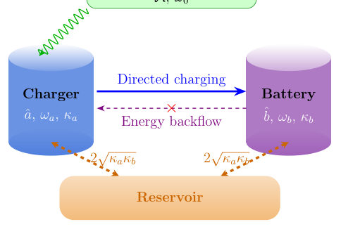
<figcaption class="paper-figure-caption"><b>Fig 1.</b> Figure 1. Schematic of the Cascaded QB model. The charger and battery are single-mode harmonic oscillators with fre- quencies ωa and ωb and local decay rates κa and κb, respec- tively. The charger is driven by a coherent laser of ampli- tude A and frequency ω0. The reservoir engineering induces a direct coupling √κaκb between the two systems, leading to unidirectional flow of energy from the charger to the battery.</figcaption>
</figure>
<figure class="paper-figure-card">
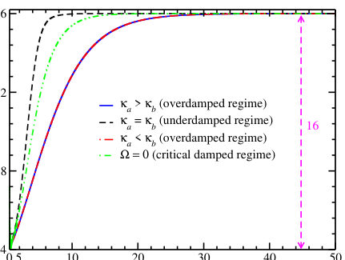
<figcaption class="paper-figure-caption"><b>Fig 2.</b> Figure 3. Energy efficiency (nonreciprocal-to-reciprocal stored energy ratio) versus rescaled time τ of the QB system. The system’s parameters are κa = 0.2ω, κb = 0.01ω (blue bold); κa = κb = 0.01ω (black dashed); κa = 0.01ω, κb = 0.2ω (red dotted-dashed); and Ω≈0 (green dotted-dashed). To enable a fair comparison, the coupling strength is set to √κaκb for reciprocal configurations.</figcaption>
</figure>
<figure class="paper-figure-card">
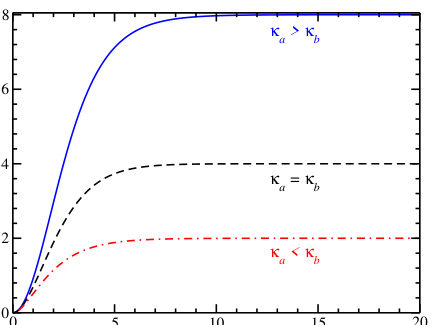
<figcaption class="paper-figure-caption"><b>Fig 3.</b> Figure 2. Energy efficiency (battery-to-charger energy ratio) of the nonreciprocal QB system as a function of rescaled time τ. The system’s parameters are κa = 0.02ω, κb = 0.01ω (blue bold); κa = κb (black dashed); and κa = 0.01ω, κb = 0.02ω (red dotted-dashed).</figcaption>
</figure>
</div>

<p><strong>Summary.</strong> This paper advances the theory of nonreciprocal quantum batteries by replacing an inconsistent theoretical framework with a mathematically rigorous cascaded open quantum systems formalism. The authors demonstrate a significant improvement in energy storage efficiency, achieving a sixteen-fold advantage over prior benchmarks. This establishes a reliable theoretical foundation for high-performance quantum energy storage devices.</p>
<p><strong>Why it may be interesting.</strong> This work directly addresses open quantum systems dynamics, energy harvesting, and the rigorous mathematical treatment of dissipation, which are core topics in AMO physics and quantum optics.</p>
<details>
<summary>Detailed structure</summary>
<p><strong>Main problem.</strong> To develop a mathematically rigorous framework for nonreciprocal quantum batteries that surpasses previously reported energy accumulation benchmarks.</p>
<p><strong>Main result.</strong> The authors achieved a regime-independent sixteen-fold steady-state nonreciprocal energy advantage over reciprocal systems, establishing the cascaded formalism as the correct physical foundation.</p>
<p><strong>Method.</strong> The study employs the rigorously established cascaded open quantum systems formalism, using the Lindblad master equation to model energy transfer dynamics.</p>
<p><strong>Model / system.</strong> The model consists of a quantum battery and a charger, both modeled as single-mode harmonic oscillators coupled to a shared reservoir, governed by a Lindblad master equation.</p>
<p><strong>Key observables.</strong> Energy Storage Capacity ($E_b(t)$), Useful Work (Ergotropy, $W_b(t)$), and Battery-to-Charger Energy Efficiency ($\eta$).</p>
<p><strong>Important parameters / regimes.</strong> Damping rates ($\kappa_a, \kappa_b$), coupling strengths, and the ratio of these rates ($\kappa_a/\kappa_b$).</p>
<p><strong>Assumptions / limitations.</strong> The primary assumption is that the cascaded formalism provides the correct physical description, correcting inconsistencies found in the Metelmann–Clerk formalism.</p>
<p><strong>Figures summary.</strong> Figures illustrate the QB model, showing energy efficiency vs. time under various damping conditions, comparing nonreciprocal versus reciprocal energy storage.</p>
<p><strong>Paper structure.</strong> The paper critiques prior work using the Metelmann–Clerk formalism, introduces the cascaded open quantum systems approach, derives time-dependent solutions for energy and efficiency, and compares the results against the established benchmarks.</p>
</details>
<details>
<summary>Abstract</summary>
<p>Nonreciprocal quantum batteries harness reservoir engineering for controlled energy transfer, heralding a paradigm shift for quantum energy storage. A prior study utilizing the Metelmann-Clerk formalism reported a fourfold enhancement in nonreciprocal energy accumulation over reciprocal counterparts. This fourfold enhancement, however, appears to stem from a Lindblad master equation that exhibits fundamental inconsistencies, which may systematically understate the actual nonreciprocal advantage. Our approach is rooted in the rigorously established cascaded open quantum systems formalism, which ensures both mathematical consistency and physical fidelity. Remarkably, we surpass the previously reported fourfold benchmark, attaining a regime-independent sixteenfold steady-state nonreciprocal energy advantage over reciprocal systems. We further uncover a dissipation-dependent battery-to-charger efficiency, fourfold under symmetric damping, surpassing this benchmark when the battery is less dissipative, and lower otherwise. This work establishes the cascaded formalism as a mathematically rigorous and experimentally viable foundation for high-performance quantum energy storage.</p>
</details>
<p><sub><a href="#top">↑ back to top</a></sub></p>

<p><a id="paper-2609.09608"></a></p>
<h3 id="convex-gaussianity-of-fermionic-gibbs-states-in-perturbation-theory"><a href="http://arxiv.org/abs/2609.09608v1">Convex-Gaussianity of fermionic Gibbs states in perturbation theory</a></h3>
<p><strong>Authors:</strong> Kaifeng Bu, Yuanjie Ren<br>
<strong>Type:</strong> theory · <strong>Category:</strong> strongly correlated electrons · <strong>PDF:</strong> <a href="https://arxiv.org/pdf/2609.09608v1">https://arxiv.org/pdf/2609.09608v1</a><br>
<strong>Analysis basis:</strong> full PDF text, analyzed in chunks
<strong>Topic relevance:</strong> <code>analog quantum simulation</code> <strong>3/5</strong> · <code>Keldysh / 2PI / non-Gaussian methods</code> <strong>2/5</strong></p>
<div class="figure-strip-hint">↔ Scroll figures horizontally</div>
<div class="paper-figures-scroll">
<figure class="paper-figure-card">
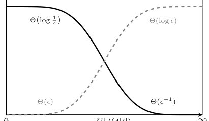
<figcaption class="paper-figure-caption"><b>Fig 1.</b> FIG. 1. The weak- and strong-coupling windows for the 2- dim Fermi–Hubbard model on a square lattice. The solid curve is read on the left axis and the dashed curve on the right axis. The asymptotic labels refer to the bounds before compactification.</figcaption>
</figure>
</div>

<p><strong>Summary.</strong> This work rigorously determines the parameter regimes, particularly the inverse temperature $eta$, for which the Gibbs state of interacting fermions remains convex-Gaussian. It achieves this by developing distinct perturbative methods for both weak and strong coupling limits of the Fermi-Hubbard model. The findings provide deep structural insights into the quantum phases of correlated electron systems.</p>
<p><strong>Why it may be interesting.</strong> The rigorous characterization of when quantum states retain simple mathematical structures (like being convex combinations of Gaussian states) is crucial for understanding entanglement structure and computational complexity in strongly correlated quantum materials.</p>
<details>
<summary>Detailed structure</summary>
<p><strong>Main problem.</strong> The paper investigates the conditions under which the Gibbs state of weakly perturbed interacting fermionic systems remains convex-Gaussian.</p>
<p><strong>Main result.</strong> It establishes precise, distinct bounds on the inverse temperature ($eta$) for convex-Gaussianity in both the weak-coupling (perturbing around free fermions) and strong-coupling (perturbing around atomic limits) regimes of the Fermi-Hubbard model.</p>
<p><strong>Method.</strong> The analysis employs perturbation theory, utilizing Majorana operators and establishing membership in the Convex-Gaussian Cone (FGC) through structured expansions and inductive proofs.</p>
<p><strong>Model / system.</strong> The primary model is the Fermi-Hubbard model, $H = tH_{	ext{hop}} + U V_{	ext{int}}$, studied on a general graph. The analysis is generalized to sparse Hamiltonians $H=H_0+V$ where $H_0$ is quadratic.</p>
<p><strong>Key observables.</strong> Convex-Gaussianity of the Gibbs state $
ho_eta$, and the expectation values of dressed single-string factors.</p>
<p><strong>Important parameters / regimes.</strong> Inverse temperature ($eta$), hopping strength ($|t|$), interaction strength ($|U|$), and the coupling ratio $\epsilon = |U|/(4|t|)$.</p>
<p><strong>Assumptions / limitations.</strong> The analysis is restricted to specific perturbative regimes (weak or strong coupling) and relies on the Hamiltonian being sparse or having specific structural properties.</p>
<p><strong>Figures summary.</strong> Figure 1 illustrates the distinct weak-coupling and strong-coupling boundaries for the 2D Fermi-Hubbard model, showing the parameter regimes where convex-Gaussianity is maintained.</p>
<p><strong>Paper structure.</strong> The paper develops results sequentially: first for general sparse Hamiltonians, then applying these results to derive specific bounds for the weak-coupling regime, and finally developing a separate framework for the strong-coupling regime.</p>
</details>
<details>
<summary>Abstract</summary>
<p>We study the structure of Gibbs states in weakly perturbed interacting fermionic systems. First, for a sparse Hamiltonian $H=H_0+V$ with a quadratic term $H_0$ and a non-quadratic perturbation $V$ of scale $ε$, we show that the Gibbs state $ρ_β$ decomposes into a convex combination of Gaussian states whenever the inverse temperature satisfies $β\le O(\log(1/ε))$. Moreover, we prove that this bound is asymptotically tight by establishing that $β\le Θ(\log(1/ε))$ is necessary for certain sparse Hamiltonians. This general framework applies directly to the weak-coupling (small-$\vert{}U\vert{}$) regime of the Fermi--Hubbard model with hopping $t$ and on-site interaction $U$ on any graph of maximum degree $D$. Complementarily, in the strong-coupling (small-$\vert{}t\vert{}$) regime, we show that the Gibbs state remains convex-Gaussian up to $β\le O\big(\vert{}U\vert{}^{-1}\log(\vert{}U\vert{}/(D\vert{}t\vert{}))\big)$, revealing a mechanism for convex-Gaussianity distinct from the weak-coupling setting.</p>
</details>
<p><sub><a href="#top">↑ back to top</a></sub></p>

<p><a id="paper-2609.10111"></a></p>
<h3 id="multiparameter-quantum-bounds-for-entanglement-assisted-aperture-synthesis"><a href="http://arxiv.org/abs/2609.10111v1">Multiparameter quantum bounds for entanglement-assisted aperture synthesis</a></h3>
<p><strong>Authors:</strong> Kalaga Madhav, Pieter Kok, Nic Scott<br>
<strong>Type:</strong> theory · <strong>Category:</strong> quantum information and computing · <strong>PDF:</strong> <a href="https://arxiv.org/pdf/2609.10111v1">https://arxiv.org/pdf/2609.10111v1</a><br>
<strong>Analysis basis:</strong> full PDF text, analyzed in chunks
<strong>Topic relevance:</strong> <code>interference shaping light</code> <strong>3/5</strong> · <code>quantum measurements</code> <strong>2/5</strong></p>
<div class="figure-strip-hint">↔ Scroll figures horizontally</div>
<div class="paper-figures-scroll">
<figure class="paper-figure-card">

<figcaption class="paper-figure-caption"><b>Fig 1.</b> Figure 1. Entanglement-assisted aperture synthesis and the achievable receiver (Sec. 3). (1) Each of M telescopes collects starlight. An entanglement source distributes shared single-photon-entangled ancillas, rij pairs to baseline (i, j). (2) At each station a local receiver—linear optics (a quantum Fourier transform) and photon-number-resolving (PNR) detection—realizes the per-baseline factor f(r) of Eq. (5) using local operations and classical communication (LOCC). (3) A global classical estimator combines the outcomes into visibilities {ˆgij} and the image ˆI(ˆs); approaching the Holevo bound is expected to require this stage to act jointly across baselines (Sec. 5).</figcaption>
</figure>
<figure class="paper-figure-card">

<figcaption class="paper-figure-caption"><b>Fig 2.</b> Figure 2. Incompatibility R versus separation in units of the resolution element λ/Bmax, for generic M-station arrays and the real CHARA array. R = 0 (desirable) means the SLD bound is attainable and per-baseline processing is optimal; R &gt; 0 means an unavoidable multiparameter penalty [Holevo bound ≤(1 + R)× SLD]. A point source gives R = 0; every extended-source model examined gives R &gt; 0. Numerical details in App. A.</figcaption>
</figure>
<figure class="paper-figure-card">

<figcaption class="paper-figure-caption"><b>Fig 3.</b> Figure 3. Weighted parameter variance Tr[WJ −1] (per photon) versus source separation for an explicit collective (global QFT) receiver, an explicit pairwise (beam-splitter) receiver, and the SLD (QFI) bound, for a two-point source on a generic M = 6 array. The collective receiver tracks the SLD bound to within ∼7%; the pairwise receiver is ∼10× worse. App. A.</figcaption>
</figure>
<figure class="paper-figure-card">

<figcaption class="paper-figure-caption"><b>Fig 4.</b> Figure 4. Noisy-resource advantage threshold. (a) Per-baseline phase QFI versus baseline length L: direct interferometry decays with fibre loss, while entanglement assistance is set by the (length-independent) repeater efficiency; they cross at L⋆≈20 km. (b) Break-even baseline L⋆of Eq. (11) over the Bell-fidelity/repeater-efficiency plane.</figcaption>
</figure>
<figure class="paper-figure-card">

<figcaption class="paper-figure-caption"><b>Fig 5.</b> Figure 5. Entanglement allocation on the CHARA array (15 baselines, two-point source at 1 mas). (a) Proportional rule (12) per baseline, sorted by visibility (lowest γij on top, annotated). (b) Proportional versus true water-filling allocation. Numerical details in App. A.</figcaption>
</figure>
</div>

<p><strong>Summary.</strong> This work tackles the quantum limits for imaging with large interferometer arrays by treating the problem as a collective multiparameter estimation task. It shows that optimal measurement requires a global, collective receiver, which significantly beats standard pairwise measurements. The results provide actionable design guidelines, including a threshold determining when distributed entanglement surpasses direct optical links.</p>
<p><strong>Why it may be interesting.</strong> It provides concrete quantum limits and design targets for quantum sensing in large-scale optical arrays, directly relevant to quantum optics and quantum metrology.</p>
<details>
<summary>Detailed structure</summary>
<p><strong>Main problem.</strong> The paper formulates and solves the multiparameter quantum estimation problem for aperture synthesis using an M-station optical array.</p>
<p><strong>Main result.</strong> A collective receiver measurement significantly outperforms pairwise receivers, and the optimal entanglement allocation follows a square-root law favoring low-visibility baselines.</p>
<p><strong>Method.</strong> The analysis uses the Quantum Fisher Information (QFI) matrix, comparing the Holevo bound to the achievable variance using collective measurement strategies.</p>
<p><strong>Model / system.</strong> The system is an M-station optical interferometry setup analyzing the coherence matrix G to estimate the brightness distribution I(s) across multiple baselines.</p>
<p><strong>Key observables.</strong> Quantum Fisher Information (QFI) matrix, mean Uhlmann curvature, weighted parameter variance, and the incompatibility factor R.</p>
<p><strong>Important parameters / regimes.</strong> The break-even baseline (L*), the entanglement resource factor f(r) = r/(1+r), and the number of stations M.</p>
<p><strong>Assumptions / limitations.</strong> The analysis relies on the weak thermal light assumption and neglects several effects like transmission loss and finite detector efficiency.</p>
<p><strong>Figures summary.</strong> Figures illustrate the incompatibility R for point vs. extended sources, compare weighted parameter variance for different receivers (collective vs. pairwise), and show the crossover defining the entanglement advantage threshold L*.</p>
<p><strong>Paper structure.</strong> The paper progresses from formulating the multiparameter QFI problem, deriving the reduction lemma, comparing measurement strategies (collective vs. pairwise), determining the resource threshold, and finally solving the optimal entanglement allocation as a convex program.</p>
</details>
<details>
<summary>Abstract</summary>
<p>Entanglement-assisted optical interferometry promises diffraction-limited imaging over baselines where light cannot be physically combined, but existing theory treats only a single visibility on one two-station baseline. This work formulates the multiparameter estimation problem for an M-station array imaging an extended scene. A reduction lemma shows that the multimode quantum Fisher information (QFI) equals the mean photon number times the QFI of a single delocalized photon, collapsing the problem to a finite-dimensional one. The local photon-number superselection rule (SSR) erases all phase information from the bare state, while shared entanglement restores a fraction f(r)=r/(1+r) of the QFI on a baseline supplied with r pairs -- a factor shown to be achievable, since the reduced two-mode state of any pair is exactly the two-station weak-thermal state. The QFI matrix and its mean Uhlmann curvature reveal numerically that a point source is measurement-compatible, whereas for every extended-source model examined it is incompatible, the Holevo bound exceeding the symmetric-logarithmic-derivative (SLD) bound by up to ~74%. An explicit collective receiver -- a global mode-sorting (quantum Fourier transform) measurement -- then attains a weighted variance within ~7% of the SLD bound and roughly an order of magnitude below an explicit pairwise receiver, and a noisy-resource advantage threshold gives the break-even baseline (~20 km for near-term parameters) beyond which repeater-distributed entanglement beats direct transmission. Finally, the optimal allocation of a finite entanglement budget is a convex program with a closed-form proportional (square-root-law) solution favoring low-visibility baselines. These results recast quantum aperture synthesis as collective multiparameter estimation and give concrete design targets, illustrated on the CHARA array.</p>
</details>
<p><sub><a href="#top">↑ back to top</a></sub></p>

<p><a id="paper-2609.10352"></a></p>
<h3 id="universal-correlations-in-the-abelian-sandpile-model"><a href="http://arxiv.org/abs/2609.10352v1">Universal correlations in the Abelian sandpile model</a></h3>
<p><strong>Authors:</strong> Qiyu Liu, Jan-Niklas Herre, Prajit Baruah, Sebastian Dreizler, Christoph Karrasch, Wioletta Ruszel, Dirk Schuricht<br>
<strong>Type:</strong> theory · <strong>Category:</strong> statistical mechanics · <strong>PDF:</strong> <a href="https://arxiv.org/pdf/2609.10352v1">https://arxiv.org/pdf/2609.10352v1</a><br>
<strong>Analysis basis:</strong> full PDF text, analyzed in chunks
<strong>Topic relevance:</strong> <code>non-equilibrium universality</code> <strong>3/5</strong> · <code>analog quantum simulation</code> <strong>1/5</strong> · <code>driven-dissipative phase transition</code> <strong>1/5</strong></p>
<div class="figure-strip-hint">↔ Scroll figures horizontally</div>
<div class="paper-figures-scroll">
<figure class="paper-figure-card">
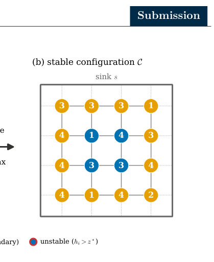
<figcaption class="paper-figure-caption"><b>Fig 1.</b> Figure 1: Toppling dynamics of the ASM on a 4 × 4 square lattice with wired boundary conditions, ie, all boundary sites being connected to an additional vertex which we call the sink. Closed (bulk) sites are shown in blue, open (boundary) sites in orange, and the surrounding box represents the sink; dotted lines indicate edges connecting boundary sites to the sink. (a) A stable configuration to which one grain has been added at an interior bulk site, which is thereby becomes unstable (hi = 5 &gt; z∗ i = 4, red ring). (b) After relaxation the system reaches the stable configuration C: the unstable site has toppled (losing z∗ i = 4 grains, dropping to h = 1) and each of its four neighbours has...</figcaption>
</figure>
<figure class="paper-figure-card">
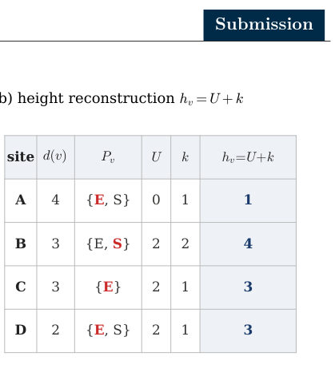
<figcaption class="paper-figure-caption"><b>Fig 2.</b> Figure 2: The Majumdar–Dhar burning bijection for the recurrent configuration C of Figure 1(b). (a) The sink-rooted spanning tree T = σ(C): arrows point from each site to its tree parent (towards the sink), and each site is labelled by its burning time d(v), equal to its depth in T. Only the tree edges are drawn (as arrows); the four closed (bulk) sites are marked A–D. (b) Reconstruction of the height at each bulk site. Reading the neighbours’ burning times from panel (a), U counts the neighbours that burn at time ≥d(v). The column Pv lists the previous-layer neighbours (those in burning layer d(v)−1) as a subset of {E, N, W, S} written in this fixed canonical order (one can analogously...</figcaption>
</figure>
<figure class="paper-figure-card">

<figcaption class="paper-figure-caption"><b>Fig 3.</b> Figure 2(b) tabulates d(v), Pv, U, k and the reconstructed hv for the four bulk sites A–D of the tree in Figure 2(a); the heights agree with those of C [Figure 1(b)], establishing the bijection T ↔C. The correspondence has a natural interpretation: both spanning trees and recurrent configurations encode global connectivity to the sink without frozen regions. A spanning tree provides every vertex with a unique path to the sink, while a recurrent configuration contains no FSC—no cluster of sites is so depleted that it can never be activated by avalanches from the boundary. The burning process bridges these viewpoints: the tree dictates the order in which fire propagates from the sink, and the...</figcaption>
</figure>
<figure class="paper-figure-card">

<figcaption class="paper-figure-caption"><b>Fig 4.</b> Figure 3 shows the three planar lattices studied in this work. Each lattice is characterised by its coordination number z (the number of nearest neighbours per bulk site) and the number of sites per unit cell:</figcaption>
</figure>
<figure class="paper-figure-card">
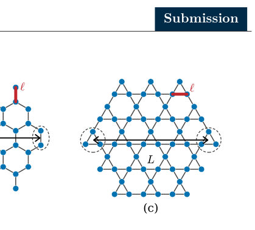
<figcaption class="paper-figure-caption"><b>Fig 5.</b> Figure 3: The three planar lattices studied in this work. (a) Square lattice (z = 4). (b) Honeycomb lattice (z = 3). (c) Kagome lattice (z = 4); the honeycomb and kagome do- mains are hexagonal, reflecting the natural boundary of the underlying triangular Bravais lattice. In each panel L is the linear system size (the domain diameter for the hexagonal cases), measured in nearest-neighbour (bond-length ℓ) units. A single nearest-neighbour bond of length ℓis highlighted (red) in each panel; we set ℓ= 1 throughout, so all dis- tances and system sizes are quoted in these units. Writing a for the lattice constant (a = ℓ square, a = √</figcaption>
</figure>
</div>

<p><strong>Summary.</strong> This work provides a comprehensive numerical and analytical study of the Abelian sandpile model on multiple lattices, aiming to characterize its universal correlations. By employing advanced sampling techniques and comparing results against Logarithmic CFT predictions, the authors confirm consistent scaling behavior across different geometries, including a first systematic study on the kagome lattice.</p>
<p><strong>Why it may be interesting.</strong> While focused on classical statistical mechanics, the study of critical phenomena, scaling laws, and the connection to CFT provides deep insights into non-equilibrium dynamics and critical exponents, which are foundational concepts in quantum many-body physics.</p>
<details>
<summary>Detailed structure</summary>
<p><strong>Main problem.</strong> The paper investigates the universal correlations and statistical properties of the Abelian sandpile model (ASM) on various 2D lattices.</p>
<p><strong>Main result.</strong> The numerical and analytical results confirm that the ASM exhibits universal scaling behavior consistent with predictions from Logarithmic Conformal Field Theory (LCFT) across square, honeycomb, and kagome lattices.</p>
<p><strong>Method.</strong> The authors combine advanced numerical sampling techniques (Wilson's algorithm with Majumdar-Dhar bijection) with analytical derivations using lattice Green functions to study bulk correlation functions.</p>
<p><strong>Model / system.</strong> The system is the Abelian sandpile model (ASM) defined on planar lattices (square, honeycomb, kagome). The dynamics are governed by local toppling rules, and the focus is on the resulting recurrent, stable configurations.</p>
<p><strong>Key observables.</strong> Bulk correlation functions (two-point), height probabilities (e.g., height-1 probability), and universal scaling exponents ($\Delta$).</p>
<p><strong>Important parameters / regimes.</strong> The lattice structure (coordination number $z$) and the correlation length $\xi 	o \infty$ (criticality).</p>
<p><strong>Assumptions / limitations.</strong> The analysis assumes the validity of the LCFT framework for describing the critical scaling limit, and for the kagome lattice, specific regularization choices for Green function calculations are made.</p>
<p><strong>Figures summary.</strong> Figures illustrate the sandpile dynamics, the Majumdar–Dhar burning bijection, and show data plots of rescaled correlation functions versus $\log r$ or $\log^2 r$ for the kagome lattice.</p>
<p><strong>Paper structure.</strong> The paper progresses from defining the ASM and its recurrence properties, establishing the mapping between recurrent configurations and spanning trees, presenting numerical studies on multiple lattices, and finally deriving analytical results for specific lattice types like the kagome lattice via Green functions.</p>
</details>
<details>
<summary>Abstract</summary>
<p>We numerically study the bulk correlation functions in the two-dimensional Abelian sandpile model, aiming both to compare with the predictions of logarithmic conformal field theory and to extend the analysis to lattices where analytical methods are difficult to apply. Wilson's algorithm efficiently generates large-scale uniform spanning trees in parallel, which can be mapped to independent recurrent configurations via the Majumdar--Dhar burning bijection, eliminating sample autocorrelations and yielding fast convergence. On the square (single-sublattice) and honeycomb (two-sublattice) lattices our results agree well with the analytical predictions. For the kagome lattice we provide the first systematic numerical study of the bulk correlation functions, and cross-check the bulk height-1 probability against a closed-form analytical expression that we also derive here via the lattice Green function.</p>
</details>
<p><sub><a href="#top">↑ back to top</a></sub></p>

<p><a id="paper-2609.09292"></a></p>
<h3 id="dual-unitary-circuits-as-a-platform-for-quantum-reservoir-computing"><a href="http://arxiv.org/abs/2609.09292v1">Dual-unitary Circuits as a Platform for Quantum Reservoir Computing</a></h3>
<p><strong>Authors:</strong> Gabriel O. Alves, Pieter W. Claeys<br>
<strong>Type:</strong> theory · <strong>Category:</strong> disordered systems and neural networks · <strong>PDF:</strong> <a href="https://arxiv.org/pdf/2609.09292v1">https://arxiv.org/pdf/2609.09292v1</a><br>
<strong>Analysis basis:</strong> full PDF text, analyzed in chunks
<strong>Topic relevance:</strong> <code>analog quantum simulation</code> <strong>3/5</strong> · <code>methods for driven-dissipative</code> <strong>1/5</strong></p>
<div class="figure-strip-hint">↔ Scroll figures horizontally</div>
<div class="paper-figures-scroll">
<figure class="paper-figure-card">

<figcaption class="paper-figure-caption"><b>Fig 1.</b> FIG. 1. An illustration of a quantum reservoir computer. The data (blue), e.g. a time series st, is encoded into a system which displays intricate internal dynamics. By evolving, the system processes the data in a nonlinear way and with memory. By performing measure- ments on the system, features are extracted which are then used to train the weights W by fitting the target function (red) yt. Unlike standard neural network architectures, the “internal weights” in the reservoir are fixed and set by the choice of reservoir, and the train- ing procedure reduces to a linear optimization on the single output layer. This picture represents a simplified QRC protocol where all the input data is...</figcaption>
</figure>
<figure class="paper-figure-card">
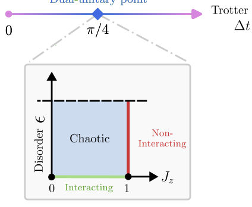
<figcaption class="paper-figure-caption"><b>Fig 2.</b> FIG. 2. Dynamical phase diagram for the DU XXZ circuit follow- ing the parametrization in Eq. (2). By varying the Trotter step we can move towards and away from the DU line at ∆t = π/4. The in- set details the behavior of the circuit at this point. First, by turning off the on-site disorder with ϵ = 0 (green edge), we have an inter- acting integrable circuit. The circuit displays solitons in this regime, which lead to unique behavior and memory effects, as we discuss in Sec. V A. Meanwhile, at Jz = 1 the circuit is non-interacting (red edge). The circuit is in the chaotic regime (blue region) for Jz , 1 and nonvanishing on-site disorder (ϵ &gt; 0).</figcaption>
</figure>
<figure class="paper-figure-card">

<figcaption class="paper-figure-caption"><b>Fig 3.</b> FIG. 3. (a) The stochastic input st is fed into Eq. (21) to encode its value into the system; simultaneously, it also serves as an argument for the chosen benchmark yt from Sec. III B [any of Eqs. (28)-(32)]. The feature matrix x is computed through Eq. (24), which allows for the calculation of the weight vector W in Eq. (25). Finally, the validation results are calculated through Eq. (26), where we try to fit the target time-series yt. We plot some basic numerical results to illustrate the framework, where we compare the analytical time- series (solid black line) with the numerical predictions (dashed green line), for both the (b) NARMA(4) and (c) the MGTS tasks. The data is split into...</figcaption>
</figure>
<figure class="paper-figure-card">

<figcaption class="paper-figure-caption"><b>Fig 4.</b> FIG. 4. An illustration of the sine-square task. The gray dotted line depicts the stochastic inputs st, which belong either to a square or sine wave. The corresponding classification yt = y(st) ∈{0, 1}, given by Eq. (31), is drawn with the solid black line. As a further guide to the eye, we also shade these regions with red and green colors on the background. The value Nss = 20 is the number of points per packet. Finally, the blue dashed line displays an example for the fitted function.</figcaption>
</figure>
<figure class="paper-figure-card">
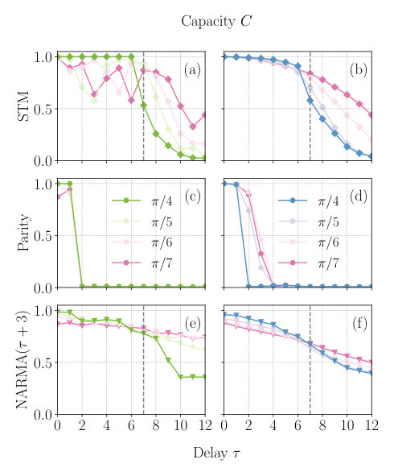
<figcaption class="paper-figure-caption"><b>Fig 5.</b> FIG. 5. Information processing capacity as a function of the delay for: [top row, panels (a) and (b)] the STM task [Eq. (28)], [middle row, panels (c) and (d)] the parity check task [Eq. (29)], and [bot- tom row, panels (e) and (f)] the NARMA(τ + 3) task [Eq. (30)]. We plot the results for the integrable (left column, ϵ = 0) and ergodic regimes (right column, ϵ = 1), for four values of the Trotter step, ∆t = π/4 (the dual-unitary point) through π/7, indicated by a color gradient from green/blue (at ∆t = π/4) to pink (away from dual- unitarity); marker shapes indicate the task (diamonds: STM, circles: parity check, triangles: NARMA). The dashed vertical line marks τ = L. The presence of...</figcaption>
</figure>
</div>

<p><strong>Summary.</strong> This work proposes utilizing dual-unitary circuits as a superior physical platform for Quantum Reservoir Computing. By leveraging the inherent properties of dual-unitarity, the authors demonstrate enhanced memory retention and nonlinear processing power while simultaneously improving robustness against quantum noise. This bridges advanced quantum circuit design with practical quantum machine learning applications.</p>
<p><strong>Why it may be interesting.</strong> The connection between the mathematical structure of dual-unitary operators (a topic in quantum control/geometry) and the practical requirements of machine learning (QRC) provides a deep theoretical link between quantum information theory and artificial intelligence.</p>
<details>
<summary>Detailed structure</summary>
<p><strong>Main problem.</strong> The paper explores using dual-unitary (DU) circuits as a novel, physically realizable platform for Quantum Reservoir Computing (QRC). It aims to show that this specific circuit structure enhances the performance of QRC compared to generic quantum circuits.</p>
<p><strong>Main result.</strong> DU circuits are shown to improve memory effects, enhance nonlinear processing capabilities, and provide inherent protection against finite-shot noise compared to standard reservoir models.</p>
<p><strong>Method.</strong> The analysis combines theoretical characterization of DU properties with numerical verification of QRC performance metrics, such as Information Processing Capacity (IPC).</p>
<p><strong>Model / system.</strong> The model is a quantum reservoir built using a 1D lattice of qubits evolving under a Floquet unitary $U_F$, which is constructed from a core gate $V$ based on the XXZ spin chain Hamiltonian. The QRC process follows an erase-input protocol.</p>
<p><strong>Key observables.</strong> Memory effects (related to solitons), nonlinear processing capability, protection against exponential concentration, and Information Processing Capacity (IPC).</p>
<p><strong>Important parameters / regimes.</strong> Anisotropy ($J_z$), Trotter step ($\Delta t$), and on-site disorder ($\epsilon$). Specific regimes include interacting integrable ($\epsilon=0, \Delta t=\pi/4$) and chaotic regimes.</p>
<p><strong>Assumptions / limitations.</strong> The analysis relies on the assumption that the DU property provides a beneficial structure for the reservoir dynamics, and it uses the folded representation for analyzing the unitary evolution.</p>
<p><strong>Figures summary.</strong> Figure 1 illustrates the general QRC protocol flow. Figure 2 shows a dynamical phase diagram mapping out different operational regimes based on system parameters. Figure 3 details the full QRC protocol flow (Washout $
ightarrow$ Training $
ightarrow$ Validation).</p>
<p><strong>Paper structure.</strong> The paper reviews the QRC protocol, investigates the role of dual-unitarity and the Trotter step, analyzes memory effects via solitons, examines nonlinear processing, and concludes by quantifying the noise resilience of the DU platform.</p>
</details>
<details>
<summary>Abstract</summary>
<p>Quantum reservoir computing (QRC) is a machine learning approach which employs the internal dynamics of a physical system (the reservoir) to encode and process information. In this work, we explore the use of dual-unitary circuits in a brickwork architecture as a platform for QRC, well suited to current noisy intermediate-scale quantum devices. Dual-unitary circuits present both practical and conceptual advantages. Our results indicate that, under appropriate conditions, dual-unitarity can lead to an enhanced regime of operation: we numerically verify that it improves memory effects and nonlinear processing, and shields against finite-shot noise, mitigating exponential concentration. Moreover, dual unitarity offers an intuitive picture of how operator dynamics gives rise to memory and nonlinear processing in circuit-based reservoirs.</p>
</details>
<p><sub><a href="#top">↑ back to top</a></sub></p>

<p><a id="paper-2609.10014"></a></p>
<h3 id="effect-of-spherical-confinement-on-the-2-tips-of-soft-repulsive-spherocylinders"><a href="http://arxiv.org/abs/2609.10014v1">Effect of Spherical Confinement on the 2-TIPS of Soft Repulsive Spherocylinders</a></h3>
<p><strong>Authors:</strong> Jaydeep Mandal, Chandan Dasgupta, Prabal K. Maiti<br>
<strong>Type:</strong> theory · <strong>Category:</strong> statistical mechanics · <strong>PDF:</strong> <a href="https://arxiv.org/pdf/2609.10014v1">https://arxiv.org/pdf/2609.10014v1</a><br>
<strong>Analysis basis:</strong> full PDF text, analyzed in chunks
<strong>Topic relevance:</strong> <code>non-equilibrium universality</code> <strong>3/5</strong> · <code>driven-dissipative phase transition</code> <strong>1/5</strong></p>
<div class="figure-strip-hint">↔ Scroll figures horizontally</div>
<div class="paper-figures-scroll">
<figure class="paper-figure-card">

<figcaption class="paper-figure-caption"><b>Fig 1.</b> Fig. 1 A) The free anchoring of the SRS on a sphere - only the center of mass (COM) positions (⃗r) are confined on the sphere, the particles can rotate freely. B) The tangential anchoring condition - The COM positions (⃗r) are confined on the sphere, and the orientations (ˆs) are tangential on the spherical surface.</figcaption>
</figure>
<figure class="paper-figure-card">

<figcaption class="paper-figure-caption"><b>Fig 2.</b> Fig. 2 Structures of the spherical monolayer of SRS: A) The initial configuration of the LC phase at a packing fraction of η = 0.2 for a system with A = 2.0,N = 2500,T ∗= 1.0. The equilibrated structure shows a small but finite orientational order even at such a low packing fraction. The particles are shown in cyan color. When 2-Temperature driven activity is introduced in the system, it shows a steady state structure of a co-existing dense (B) and dilute (C) regions. The representative snapshot is for (T ∗ c = 2.0,T ∗ h = 20.0). The hot particles are shown in red, whereas the cold ones are shown in blue. B) shows the top view, highlighting the dense cluster, which is composed of both hot...</figcaption>
</figure>
<figure class="paper-figure-card">
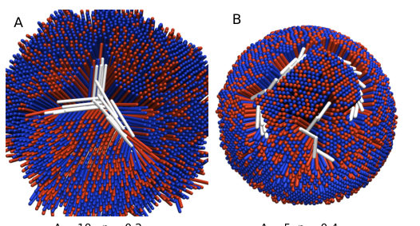
<figcaption class="paper-figure-caption"><b>Fig 3.</b> Fig. 3 Effect of aspect ratios on the structure of the coexisting phases in a spherical monolayer: A) The orientational defects arising in the phase- separated cold zone is shown in white. The red and blue particles indicate ‘hot’ and ‘cold’ respectively. Snapshot taken for a system of SRS with aspect ratio A = 10.0 at a packing fraction of η = 0.2. This occurrence of defect structures with long rods at lower packing fractions can be attributed to the steric strain at the tail ends of the SRSs inside the sphere. B) Similar orientational defect structures, shown in white, arise for even smaller rods (A = 5.0) at a higher packing fraction of η = 0.4. The red and blue colors indicate the ‘hot’...</figcaption>
</figure>
<figure class="paper-figure-card">

<figcaption class="paper-figure-caption"><b>Fig 4.</b> Fig. 4 Effect of aspect ratios on the phase separation in the spherical monolayer system: for a specific packing fraction η = 0.2, the phase separation order parameter φ is plotted with activity χ for different aspect ratios of the rods, A = 2.0,5.0 and 10.0. Phase separation increases with activity for all cases, but the saturation value of the order parameter (φs) reduces as the rods become longer. φs is indicated in the figure for A = 2.0.</figcaption>
</figure>
<figure class="paper-figure-card">
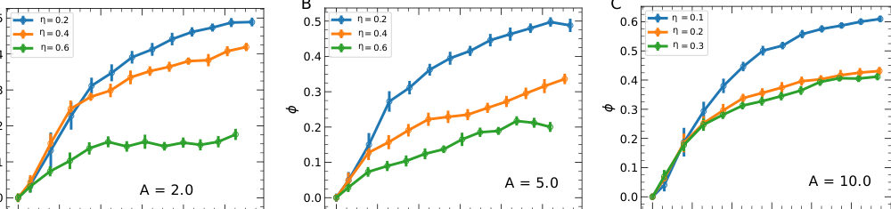
<figcaption class="paper-figure-caption"><b>Fig 5.</b> Fig. 5 Effect of packing fraction on the phase separation in the spherical monolayer system: The phase separation order parameter is plotted against the activity χ at different packing fractions η = 0.2,0.4, and 0.6 for A) short rods A = 2.0, B) medium rods A = 5.0 and C) long rods A = 10.0. For all the figures A) B) and C), the value at which the phase separation order parameter saturates decreases with packing fraction. This can be attributed to the enhanced trapping with packing fraction in confined systems.</figcaption>
</figure>
</div>

<p><strong>Summary.</strong> This work models the phase separation of soft repulsive spherocylinders confined to a sphere under non-equilibrium conditions (2-TIPS). Using MD simulations, the authors demonstrate that confinement alters the phase diagram, leading to dense-dilute coexistence. The research highlights the critical role of curvature in suppressing expected nematic ordering, providing valuable insights for soft matter physics.</p>
<p><strong>Why it may be interesting.</strong> The study provides insights into how geometric confinement (spherical curvature) fundamentally modifies phase separation dynamics, offering analogies to non-equilibrium processes relevant in active matter and complex fluids.</p>
<details>
<summary>Detailed structure</summary>
<p><strong>Main problem.</strong> The study investigates the 2-Temperature induced phase separation (2-TIPS) in a system of soft repulsive spherocylinders confined on a spherical surface.</p>
<p><strong>Main result.</strong> The system exhibits phase separation into coexisting dense and dilute regions, with confinement significantly altering the expected phase behavior, such as suppressing nematic ordering.</p>
<p><strong>Method.</strong> Molecular Dynamics (MD) simulations were employed in the NVT ensemble, utilizing a 2-temperature framework to model non-equilibrium activity.</p>
<p><strong>Model / system.</strong> The system consists of soft repulsive spherocylinders (SRS) confined either as a spherical monolayer or a spherical shell. Interactions are modeled using the WCA potential, and the non-equilibrium state is induced by coupling subsystems at different temperatures.</p>
<p><strong>Key observables.</strong> Phase separation extent quantified by the order parameter $\varphi$, local density distribution, and orientational ordering analyzed via the probability density distribution of the angle $\psi$.</p>
<p><strong>Important parameters / regimes.</strong> Packing fraction ($\eta$), rod aspect ratio ($A$), and the activity difference ($\chi$) are key parameters varied across different confinement geometries.</p>
<p><strong>Assumptions / limitations.</strong> The analysis assumes the validity of the 2-temperature model for inducing non-equilibrium activity and notes limitations regarding the systematic study of the nematic phase across all aspect ratios.</p>
<p><strong>Figures summary.</strong> Figures illustrate the coexisting dense/dilute regions (hot/cold) upon 2-TIPS, showing defect structures and the bimodal density distribution confirming phase coexistence.</p>
<p><strong>Paper structure.</strong> The paper systematically compares results between free and tangential anchoring conditions on the spherical surface, detailing the phase separation mechanism and contrasting the findings with bulk 3D systems.</p>
</details>
<details>
<summary>Abstract</summary>
<p>We studied the 2-Temperature induced phase separation (2-TIPS) in a system of soft repulsive sphe rocylinders (SRS), confined on the surface of a sphere. We used two different anchoring conditions for the SRS on the spherical surface- free and tangential. For the free anchoring, increasing either the packing fraction or the rod aspect ratio suppresses phase separation between the active and passive subsystems, and the system corresponds to a dense-dilute phase co-existence. These phenomena can be explained via the trapping effect and are emergent due to the confinement. For the tangential anchoring, the system phase separates from its initial isotropic state into a locally ordered dense region and a disordered dilute region. Our work provides useful insights into phase separation in binary mixtures under spherical confinement.</p>
</details>
<p><sub><a href="#top">↑ back to top</a></sub></p>

<p><a id="paper-2609.10519"></a></p>
<h3 id="optimal-intermediate-hamiltonians-for-non-equilibrium-free-energy-calculations-a-numerical-study-of-markov-models"><a href="http://arxiv.org/abs/2609.10519v1">Optimal Intermediate Hamiltonians for Non-Equilibrium Free Energy Calculations: A Numerical Study of Markov Models</a></h3>
<p><strong>Authors:</strong> David Beyer, Helmut Grubmüller<br>
<strong>Type:</strong> theory · <strong>Category:</strong> statistical mechanics · <strong>PDF:</strong> <a href="https://arxiv.org/pdf/2609.10519v1">https://arxiv.org/pdf/2609.10519v1</a><br>
<strong>Analysis basis:</strong> full PDF text, analyzed in chunks
<strong>Topic relevance:</strong> <code>methods for driven-dissipative</code> <strong>3/5</strong> · <code>quantum measurements</code> <strong>1/5</strong></p>
<div class="figure-strip-hint">↔ Scroll figures horizontally</div>
<div class="paper-figures-scroll">
<figure class="paper-figure-card">
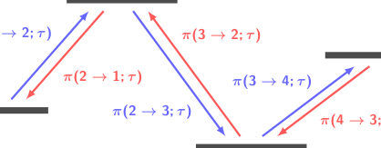
<figcaption class="paper-figure-caption"><b>Fig 1.</b> FIG. 1. Schematic representation of the discrete-time Markov models studied in this work. The discrete states are arranged on a line, and transitions are allowed only between neighboring states. Transition probabilities are given by the Glauber transition matrix elements π(x →y;τ) (Equation 6), which depend on the time-dependent Hamiltonian H(x,τ +1).</figcaption>
</figure>
<figure class="paper-figure-card">

<figcaption class="paper-figure-caption"><b>Fig 2.</b> FIG. 2. Optimal intermediate Hamiltonians H(2,τ) for the two-state system with an initial energy of Ei = −8. (a): H(2,τ) for N = 10 intermediates and different final energies Ef. (b): H(2,τ) for a final energy of Ef = 8 and different numbers of intermediates N. The MC time was normalized by the total number of steps N +1. The inset magnifies the initial jump.</figcaption>
</figure>
<figure class="paper-figure-card">
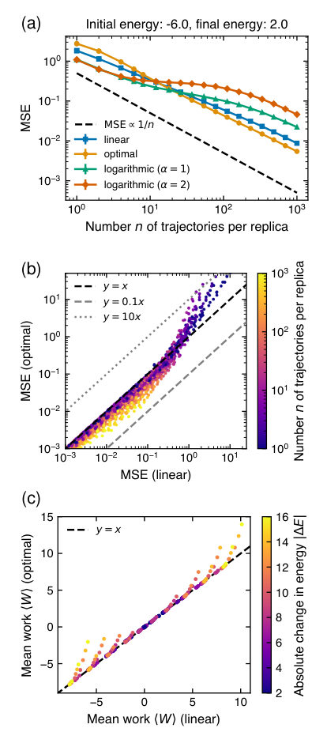
<figcaption class="paper-figure-caption"><b>Fig 3.</b> FIG. 3. Performance of optimal intermediates for a two-state sys- tem. (a): Dependence of the MSE for linear, logarithmic, and opti- mal intermediates on the number n of trajectories per replica. The initial energy is set to Ei = −6, the final energy is set to Ef = 2, and the number of intermediate steps is N = 10. The black dashed line shows the expected power-law decay MSE ∝1/n for n →∞. (b): Correlation plot of the MSE for linear and optimal intermediates. (c): Correlation plot of the mean work performed on the system for linear and optimal intermediates. In all subfigures (a)–(c), error bars corresponding to the standard error of the mean of the shown quanti- ties are included, but...</figcaption>
</figure>
<figure class="paper-figure-card">

<figcaption class="paper-figure-caption"><b>Fig 4.</b> FIG. 4. Optimal intermediates and their performance for the double-well potential. (a): Toy model for a double-well potential with barrier heights ∆1 and ∆2. (b): Optimal intermediate Hamiltonian for a double-well potential with ∆1 = 6, ∆2 = 3, and N = 100 intermediate MC steps. (c): Correlation plot of the MSE for linear and optimal intermediates. (d): Correlation plot of the mean work performed on the system for linear and optimal intermediates. For subfigures (c) and (d), error bars corresponding to the standard error of the mean of the shown quantities are included, but smaller than the symbol size.</figcaption>
</figure>
<figure class="paper-figure-card">

<figcaption class="paper-figure-caption"><b>Fig 5.</b> FIG. 5. Optimal intermediates and their performance for the shifted potential well. (a): Toy model for a potential well of depth δ that is shifted from x = 1 at time τ = 0 to x = m at time τ = N +1. (b): Optimal intermediate Hamiltonian for a shifted potential well of depth δ = 5, with m = 10 states and N = 100 intermediate MC steps. The insets show magnified views of the initial and final jumps. (c): Mean position ⟨x⟩as a function of τ for δ = 5, m = 10 states, and N = 100, shown for optimal, linear, and logarithmic (α = 1 and α = 2) intermediates. (d): Correlation plot of the time-dependent mean position ⟨x⟩obtained for optimal and linear intermediates. The curves are colored according to...</figcaption>
</figure>
</div>

<p><strong>Summary.</strong> This paper develops a method to find optimal time-dependent Hamiltonians that significantly improve the convergence of free energy estimates derived from non-equilibrium simulations. By minimizing the Mean Squared Error (MSE) of the Jarzynski estimator for Markov models, the authors show that these optimal Hamiltonians can drastically outperform simple linear or logarithmic interpolations. This offers a powerful new tool for calculating free energy barriers in complex physical systems.</p>
<p><strong>Why it may be interesting.</strong> This work provides concrete, computationally derived heuristics for improving non-equilibrium free energy calculations, which is crucial for simulating processes in molecular dynamics and condensed matter systems where rare events dominate.</p>
<details>
<summary>Detailed structure</summary>
<p><strong>Main problem.</strong> The paper addresses the poor convergence of free energy estimates derived from non-equilibrium, finite-time switching simulations using the Jarzynski relation.</p>
<p><strong>Main result.</strong> Optimal intermediate Hamiltonians, determined by minimizing the Mean Squared Error (MSE), can reduce the MSE by over an order of magnitude compared to simple interpolations.</p>
<p><strong>Method.</strong> The authors use gradient-based minimization techniques applied to an exact tilted-master-equation representation of the MSE for discrete-time Markov models.</p>
<p><strong>Model / system.</strong> The study uses discrete-time Markov models defined on a line of $m$ states, whose evolution is governed by a time-dependent Hamiltonian $H(x, 	au)$ within a master equation framework.</p>
<p><strong>Key observables.</strong> Mean Squared Error (MSE) of the Jarzynski estimator, mean work ($\langle W 
angle$), and mean position ($\langle x 
angle$).</p>
<p><strong>Important parameters / regimes.</strong> The complexity is varied by changing the number of states ($m$), the depth ($\delta$) of the potential well, and the number of intermediate steps ($N$).</p>
<p><strong>Assumptions / limitations.</strong> The analysis is restricted to discrete-time Markov models, and the optimization relies on the large-sample limit ($n \gg 1$) for the MSE calculation.</p>
<p><strong>Figures summary.</strong> Figures systematically compare the calculated mean position ($\langle x 
angle$) and the MSE for various intermediate Hamiltonians (optimal vs. linear/logarithmic) across different model parameters ($\delta, m, N$).</p>
<p><strong>Paper structure.</strong> The paper first establishes the problem using the Jarzynski relation for Markov models. It then develops the mathematical framework to minimize the MSE using tilted-master-equations. Finally, it applies this method to complex model systems like the shifted potential well, comparing optimal results against standard interpolation schemes.</p>
</details>
<details>
<summary>Abstract</summary>
<p>The Jarzynski relation enables the estimation of equilibrium free energy differences from non-equilibrium, finite-time switching simulations. These estimates usually converge poorly because rare trajectories dominate the exponential work average. Here, we numerically determined and explored the sequence of intermediate Hamiltonians connecting initial and final states that minimize the mean squared error (MSE) of the Jarzynski estimator and thereby enhance convergence. For discrete-time Markov models, an exact tilted-master-equation representation of the MSE in the large-sample limit, combined with automatic differentiation, enables efficient gradient-based minimization over all intermediate energies. We applied our approach to three model systems of increasing complexity: a two-state model, a double-well potential, and a shifted potential well. In all three systems, the optimal intermediate Hamiltonians jump at the initial and final times. Extensive Monte Carlo simulations show that optimal intermediates can reduce the MSE by more than an order of magnitude compared with linear and logarithmic interpolation, most strongly for large changes in the energy landscape. Remarkably, they need not dissipate less work than intermediates yielding larger errors. Our results suggest heuristics for more efficient non-equilibrium free energy calculations of realistic molecular systems: optimal intermediate Hamiltonians jump at the initial and final times; for barrier-crossing problems, the barrier should be lowered rapidly and raised again later; and minimizing dissipation does not guarantee faster convergence.</p>
</details>
<p><sub><a href="#top">↑ back to top</a></sub></p>

<p><a id="paper-2609.10013"></a></p>
<h3 id="a-separation-between-full-rank-pvm-and-assumption-free-self-testing"><a href="http://arxiv.org/abs/2609.10013v1">A Separation between Full-Rank PVM and Assumption-free Self-Testing</a></h3>
<p><strong>Authors:</strong> Ranyiliu Chen<br>
<strong>Type:</strong> theory · <strong>Category:</strong> quantum information and computing · <strong>PDF:</strong> <a href="https://arxiv.org/pdf/2609.10013v1">https://arxiv.org/pdf/2609.10013v1</a><br>
<strong>Analysis basis:</strong> full PDF text, analyzed in chunks
<strong>Topic relevance:</strong> <code>quantum measurements</code> <strong>3/5</strong></p>
<div class="figure-strip-hint">↔ Scroll figures horizontally</div>
<div class="paper-figures-scroll">
<figure class="paper-figure-card">
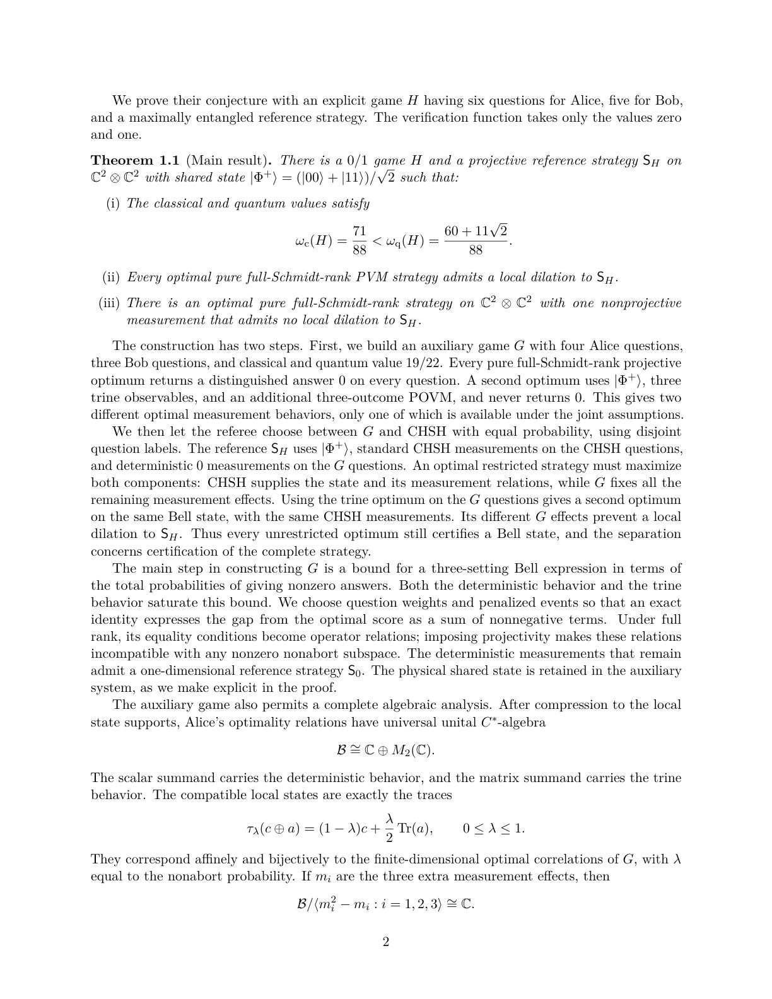
<figcaption class="paper-figure-caption"><b>Fig 1.</b> Low-resolution page preview, page 2</figcaption>
</figure>
<figure class="paper-figure-card">

<figcaption class="paper-figure-caption"><b>Fig 2.</b> Low-resolution page preview, page 3</figcaption>
</figure>
<figure class="paper-figure-card">

<figcaption class="paper-figure-caption"><b>Fig 3.</b> Low-resolution page preview, page 4</figcaption>
</figure>
<figure class="paper-figure-card">
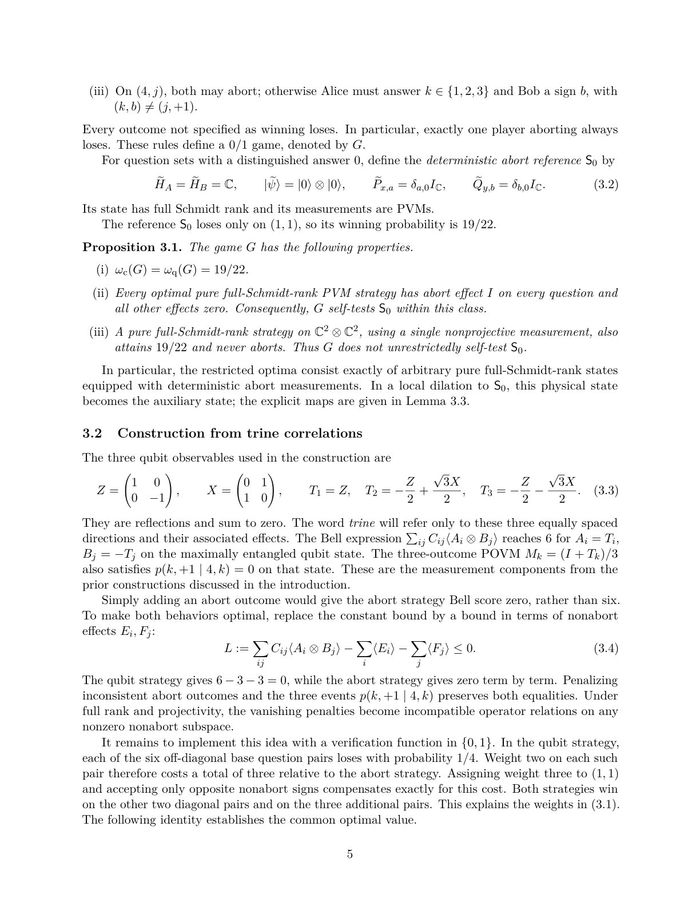
<figcaption class="paper-figure-caption"><b>Fig 4.</b> Low-resolution page preview, page 5</figcaption>
</figure>
<figure class="paper-figure-card">

<figcaption class="paper-figure-caption"><b>Fig 5.</b> Low-resolution page preview, page 6</figcaption>
</figure>
</div>

<p><strong>Summary.</strong> This paper rigorously demonstrates that the self-testing of maximally entangled qubit strategies is not robust when restricted only to full-rank Projective Measurements (PVMs). By constructing a specific nonlocal game, the authors show that optimal correlations achievable with nonprojective measurements are fundamentally different from those achievable under the strict PVM assumption.</p>
<p><strong>Why it may be interesting.</strong> This work provides a deep theoretical understanding of the limitations of self-testing protocols in quantum information theory, showing that imposing physical constraints (like projectivity) can fundamentally alter the set of achievable correlations.</p>
<details>
<summary>Detailed structure</summary>
<p><strong>Main problem.</strong> The paper investigates the robustness of self-testing protocols for maximally entangled qubit strategies when restricted to pure, full-Schmidt-rank Projective Measurements (PVMs). It aims to resolve a conjecture regarding the simultaneous imposition of full rank and projectivity.</p>
<p><strong>Main result.</strong> The authors prove a separation: an optimal strategy using a nonprojective measurement can be found that does not admit a local dilation to the reference state, demonstrating that the full-rank PVM self-test is not robust.</p>
<p><strong>Method.</strong> The analysis constructs a nonlocal game $H$ combining CHSH with an auxiliary game $G$. The core method involves comparing the algebraic structure of optimal correlations derived from PVMs versus those from nonprojective measurements, utilizing local dilation concepts.</p>
<p><strong>Model / system.</strong> The study uses qubits ($\mathbb{C}^2 \otimes \mathbb{C}^2$) and the maximally entangled state $|\Phi^+
angle$ within the framework of nonlocal games. The analysis heavily relies on the algebraic structure of optimal correlations, involving $C^*$-algebras like $C \oplus M_2(C)$.</p>
<p><strong>Key observables.</strong> The quantum value ($\omega_q(H)$) and classical value ($\omega_c(H)$) of the constructed game $H$; the local dilation error.</p>
<p><strong>Important parameters / regimes.</strong> The parameter $t \in (0, 1)$ controlling the deviation from the reference state; the specific correlation values like $19/22$ and $71/88$.</p>
<p><strong>Assumptions / limitations.</strong> The argument hinges on the algebraic difference between deterministic optima (from projectivity) and trine optima (from nonprojectivity) in the auxiliary game $G$.</p>
<p><strong>Paper structure.</strong> The paper first analyzes the auxiliary game $G$ to establish a discrepancy between its projective and nonprojective optima. It then combines $G$ with the CHSH game to construct $H$, culminating in the proof of the separation theorem showing the non-robustness of the PVM self-test.</p>
</details>
<details>
<summary>Abstract</summary>
<p>We construct a nonlocal game that self-tests a maximally entangled qubit strategy among pure full-Schmidt-rank projective strategies, but admits an inequivalent optimum using one nonprojective measurement. This resolves a conjecture of Baptista et al. on imposing full rank and projectivity simultaneously. The construction combines CHSH with an auxiliary game $G$ that forces deterministic answers under these assumptions and admits a trine POVM optimum without them. We classify the optimal correlations of $G$ as a line segment parametrized by the tracial states of $\mathbb{C}\oplus M_2(\mathbb{C})$. Projectivity on the state support removes the matrix summand, whereas projective dilations with nonzero nonabort probability have a nontracial local state whose zero left ideal is not two-sided. Finally, a family in local dimension six shows that the full-rank PVM self-test is not robust.</p>
</details>
<p><sub><a href="#top">↑ back to top</a></sub></p>

<p><a id="paper-2609.09294"></a></p>
<h3 id="bell-tests-for-collider-decay-processes"><a href="http://arxiv.org/abs/2609.09294v1">Bell tests for collider decay processes</a></h3>
<p><strong>Authors:</strong> Danilo M. Fucci, Alexandre C. Orthey, Alan J. Barr, Christopher G. Timpson<br>
<strong>Type:</strong> theory · <strong>Category:</strong> other · <strong>PDF:</strong> <a href="https://arxiv.org/pdf/2609.09294v1">https://arxiv.org/pdf/2609.09294v1</a><br>
<strong>Analysis basis:</strong> full PDF text, analyzed in chunks
<strong>Topic relevance:</strong> <code>quantum measurements</code> <strong>3/5</strong></p>
<div class="figure-strip-hint">↔ Scroll figures horizontally</div>
<div class="paper-figures-scroll">
<figure class="paper-figure-card">

<figcaption class="paper-figure-caption"><b>Fig 1.</b> Figure 1. Geometric coarse graining defined by the analysis axis ˆx. The shaded antipodal caps of angular radius φ give outcomes +1 and −1; directions outside them give the geo- metric no-click outcome ∅. The vector ˆrA is drawn on the boundary of the +1 cap, so that φ is the angle between ˆrA and ˆx. The cutaway is only illustrative.</figcaption>
</figure>
</div>

<p><strong>Summary.</strong> This work proposes a novel Bell test framework for analyzing data from particle collider decays. It tackles the inherent loophole caused by postselection by requiring operational equivalence across measurement settings. A violation of the derived Bell inequality provides evidence for quantum nonlocality or measurement contextuality in this high-energy physics context.</p>
<p><strong>Why it may be interesting.</strong> While focused on particle physics, the rigorous development of contextuality constraints based on operational equivalence in a measurement setting is highly relevant to foundational quantum information theory and loophole-free tests.</p>
<details>
<summary>Detailed structure</summary>
<p><strong>Main problem.</strong> The paper develops a framework to perform Bell tests using data recorded from high-energy collider decays, addressing the challenge of measurement settings being determined by detector acceptance rather than freely chosen.</p>
<p><strong>Main result.</strong> A violation of a derived Bell inequality, under assumptions of measurement independence and operational equivalence, witnesses either Bell nonlocality or joint-acceptance contextuality.</p>
<p><strong>Method.</strong> The authors derive a continuous-input Bell inequality and analyze the loophole opened by postselection, showing that operational equivalence constrains local hidden variable models.</p>
<p><strong>Model / system.</strong> The system involves the decay of unstable qubits in a collider, where daughter momenta act as spin analyzers. The test uses independently sampled analysis axes to define accepted spherical caps for binary outcomes.</p>
<p><strong>Key observables.</strong> The Bell functional B = -<x . y a b>, the local acceptance probability q_A, and the joint acceptance event D.</p>
<p><strong>Important parameters / regimes.</strong> Spin-analyzing power (eta_A), the cap radius (phi), and the bound violation condition mu_A mu_B &gt; 3/4.</p>
<p><strong>Assumptions / limitations.</strong> Measurement independence (lambda-independence) and the operational equivalence of joint-acceptance events across all settings are crucial assumptions.</p>
<p><strong>Figures summary.</strong> Figure 1 illustrates the geometric coarse-graining defined by the analysis axis, showing the accepted caps (+1, -1) and the no-click region (empty set).</p>
<p><strong>Paper structure.</strong> The paper progresses from defining the Bell test framework for collider data, addressing the postselection loophole, deriving the contextuality constraint via operational equivalence, and finally presenting the specific Bell inequality and its quantum prediction.</p>
</details>
<details>
<summary>Abstract</summary>
<p>We propose Bell tests for collider decays using independently sampled analysis axes as settings and detector regions to assign binary or null outcomes. We show that a Bell violation requires postselection, opening a loophole. However, under measurement independence and operational equivalence of acceptance events across settings, any local model exploiting the loophole must be nonclassical in the sense of measurement contextuality. We derive a Bell inequality violated by singlet correlations when the effective spin-analyzing powers are sufficiently high. Its violation then witnesses Bell nonlocality or measurement contextuality.</p>
</details>
<p><sub><a href="#top">↑ back to top</a></sub></p>

<p><a id="paper-2609.09994"></a></p>
<h3 id="coded-clifford-measurements-for-multiqubit-magic-state-cultivation"><a href="http://arxiv.org/abs/2609.09994v1">Coded Clifford Measurements for Multiqubit Magic-State Cultivation</a></h3>
<p><strong>Authors:</strong> Gunsik Min, Jun Heo<br>
<strong>Type:</strong> theory · <strong>Category:</strong> quantum information and computing · <strong>PDF:</strong> <a href="https://arxiv.org/pdf/2609.09994v1">https://arxiv.org/pdf/2609.09994v1</a><br>
<strong>Analysis basis:</strong> full PDF text, analyzed in chunks
<strong>Topic relevance:</strong> <code>quantum measurements</code> <strong>3/5</strong></p>
<div class="figure-strip-hint">↔ Scroll figures horizontally</div>
<div class="paper-figures-scroll">
<figure class="paper-figure-card">
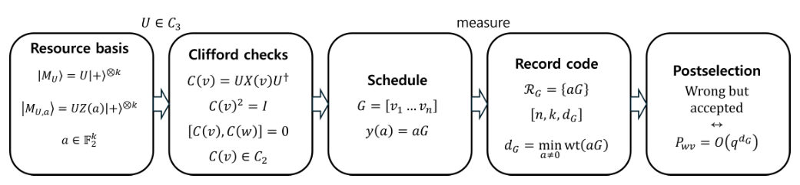
<figcaption class="paper-figure-caption"><b>Fig 1.</b> FIG. 1. Logical-level code–cultivation correspondence. A third-level resource basis provides commuting Clifford checks C(v). Choosing check labels vt defines the measurement schedule G = [v1 · · · vn] and the valid record code RG = {aG}. Postselection accepts only valid records; a wrong accepted branch therefore requires a nonzero displacement e ∈RG, so the record-code distance dG sets the accepted record-error order, Pwv = O(qdG).</figcaption>
</figure>
<figure class="paper-figure-card">

<figcaption class="paper-figure-caption"><b>Fig 2.</b> FIG. 2. Consequences of coded Clifford records. (a) For distance four, coding reduces the CS schedule from 8 to 6 logical checks, from 948 to 696 compiled-core active locations, and from 2844 to 2040 active-qubit gate steps; the CCZ schedule falls from 12 to 7 logical checks. (b) The optimal [5, 2, 3] and [6, 2, 4] two-bit records give cubic and quartic wrong-acceptance scaling. (c) The [7, 3, 4] CCZ simplex schedule reaches the minimum length allowed for any binary record.</figcaption>
</figure>
<figure class="paper-figure-card">

<figcaption class="paper-figure-caption"><b>Fig 3.</b> FIG. 1. Exact semantics of one logical record measurement. The circuit realizes the projectors in Eq. (48); it is an algebraic reference circuit, not a claim of low fault-tolerant overhead.</figcaption>
</figure>
<figure class="paper-figure-card">
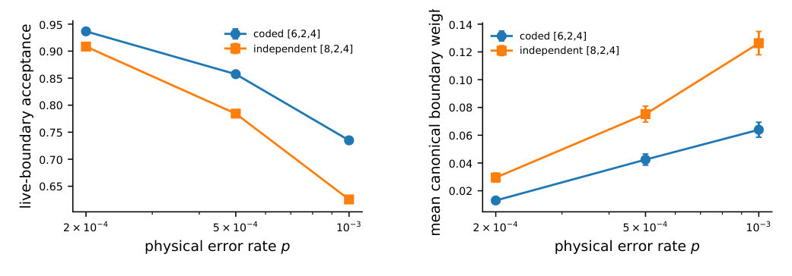
<figcaption class="paper-figure-caption"><b>Fig 4.</b> FIG. 2. Live Steane-boundary diagnostics after removing the final ideal code-space projection. Left: record-and-midpoint acceptance. Right: mean weight of the canonical two-block Steane boundary representative among accepted shots. Error bars show one standard error. These are boundary-quality diagnostics, not full-factory logical-error estimates.</figcaption>
</figure>
</div>

<p><strong>Summary.</strong> This paper develops a theoretical framework showing that error suppression during magic-state cultivation can be modeled exactly by a binary linear code. By using coded Clifford measurements, the authors demonstrate substantial physical savings in required resources (like gate steps and active locations) compared to naive repetition schemes. This provides a concrete, resource-efficient pathway for building fault-tolerant quantum computation.</p>
<p><strong>Why it may be interesting.</strong> While focused on quantum computation, the rigorous application of coding theory bounds (like the Plotkin bound) to physical measurement constraints provides a powerful theoretical framework for optimizing resource overhead in any complex quantum system.</p>
<details>
<summary>Detailed structure</summary>
<p><strong>Main problem.</strong> The paper addresses the need for efficient, fault-tolerant methods to cultivate necessary quantum resources, specifically magic states, by suppressing errors through measurement of logical Clifford symmetries.</p>
<p><strong>Main result.</strong> Implementing the measurement schedule using coded Clifford observables allows for significant resource savings (e.g., 26.6% reduction in active locations) compared to independent repetition schedules, while maintaining the required error suppression distance.</p>
<p><strong>Method.</strong> The authors map the error-suppressing measurement process onto a binary linear code structure, using commuting Hermitian Clifford observables derived from the resource state symmetries.</p>
<p><strong>Model / system.</strong> The model is fault-tolerant quantum computation, focusing on resource state preparation (magic states like $|CS
angle$ and $|CCZ
angle$) and error correction via measurement of logical symmetries within the Clifford group $\mathcal{C}_3$.</p>
<p><strong>Key observables.</strong> Record-error fault order ($d_{	ext{record}}$), active locations, qubit-steps, and the resulting logical error probability $P_{	ext{wv}} = O(q^d)$.</p>
<p><strong>Important parameters / regimes.</strong> Code distance ($d$), resource type ($|CS
angle, |CCZ
angle$), and the physical error rate ($p$).</p>
<p><strong>Assumptions / limitations.</strong> The analysis focuses on the logical-level code-cultivation correspondence, and the results are noted to be diagnostics rather than full-factory logical-error estimates.</p>
<p><strong>Figures summary.</strong> Figures illustrate the logical-level code-cultivation correspondence, quantifying resource reductions (e.g., gate steps, logical checks) achieved by coded schedules versus independent repetition schedules for various resource types.</p>
<p><strong>Paper structure.</strong> The paper establishes the link between error suppression and linear codes, derives the measurement observables $C(v)$, compares resource costs (active locations/qubit-steps) between coded and non-coded methods, and concludes with optimization results for minimum-cost schedules.</p>
</details>
<details>
<summary>Abstract</summary>
<p>Magic-state cultivation suppresses errors by measuring logical Clifford symmetries and discarding inconsistent outcomes. For an entangled resource several branches are accepted, so the retained branch carries a multibit classical record whose corruption produces a logical-frame error. We show that this record layer is exactly a binary linear code. For any third-level Clifford-hierarchy unitary $U \in \mathcal{C}_3$, the branches $UZ(a)|+\rangle^{\otimes k}$ are resolved by commuting Hermitian Clifford observables $C(v) = UX(v)U^{\dagger}$, so a measurement schedule is a generator matrix and postselection on valid records gives $P_{\mathrm{wv}} = O(q^{d})$ at record distance $d$. A Plotkin bound then limits every binary record, linear or not. The physically realizable Clifford family already saturates it: at distance four, six logical measurements suffice for $|CS\rangle$ and seven for $|CCZ\rangle$, against eight and twelve for independent repetition. Restricting to fault-tolerantly measurable parities therefore costs nothing in record length. The saving survives compilation: in a native-CZZ-assisted Steane realization the $[6,2,4]$ CS schedule is the unique minimum-cost distance-four solution, reducing the cultivation core by 26.6\% in active locations, and exact state-vector simulation without a final ideal code-space projection confirms higher acceptance and roughly half the residual Steane-boundary weight. Coding thus reduces logical redundancy and compiled overhead together.</p>
</details>
<p><sub><a href="#top">↑ back to top</a></sub></p>

<p><a id="paper-2609.09980"></a></p>
<h3 id="fidelity-aware-scheduling-of-quantum-circuits-on-multi-qpu-systems"><a href="http://arxiv.org/abs/2609.09980v1">Fidelity-Aware Scheduling of Quantum Circuits on Multi-QPU Systems</a></h3>
<p><strong>Authors:</strong> Innocenzo Fulginiti, Antonio Tudisco, Salvatore Zammuto, Patrick Hopf, Deborah Volpe, Helmut Seidl, Giovanna Turvani, Robert Wille, Christian B. Mendl, Martin Schulz<br>
<strong>Type:</strong> both · <strong>Category:</strong> quantum information and computing · <strong>PDF:</strong> <a href="https://arxiv.org/pdf/2609.09980v1">https://arxiv.org/pdf/2609.09980v1</a><br>
<strong>Analysis basis:</strong> full PDF text, analyzed in chunks
<strong>Topic relevance:</strong> <code>QC/QI experiment</code> <strong>3/5</strong></p>
<div class="figure-strip-hint">↔ Scroll figures horizontally</div>
<div class="paper-figures-scroll">
<figure class="paper-figure-card">
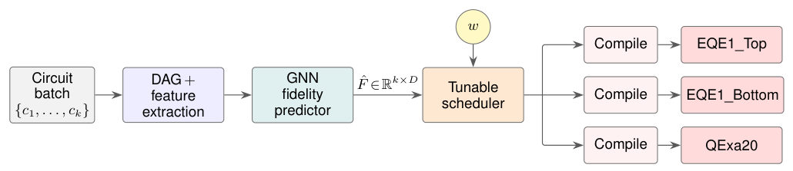
<figcaption class="paper-figure-caption"><b>Fig 1.</b> Fig. 1: End-to-end pipeline of the proposed framework. A user-submitted batch of k high-level quantum circuits is converted into Directed Acyclic Graphs with per-node feature vectors and fed to the GNN fidelity predictor, which produces an estimated fidelity matrix ˆF over all k × D circuit-device pairs. The tunable scheduler, parameterized by the fidelity weight w, routes each circuit to one of the available QPU backends; each assigned circuit is then transpiled against the target device’s native gate set and connectivity, and then executed on the corresponding backend.</figcaption>
</figure>
<figure class="paper-figure-card">

<figcaption class="paper-figure-caption"><b>Fig 2.</b> Fig. 2: Conversion from circuit to DAG. A quantum circuit (a) is translated into a DAG (b), whose nodes are gates and measurements and whose edges encode data dependencies; each node is then mapped to the feature vector of (c), shown for a CX gate.</figcaption>
</figure>
<figure class="paper-figure-card">

<figcaption class="paper-figure-caption"><b>Fig 3.</b> Fig. 3: Logic of a single dispatch tick within the QMS. The broker constructs an immutable snapshot of the queue and per-device state, invokes the scheduling policy to produce a device-to-circuit mapping, and dispatches each circuit to its assigned backend for transpilation and execution. The dashed arrow indicates the tick-based cycle.</figcaption>
</figure>
<figure class="paper-figure-card">
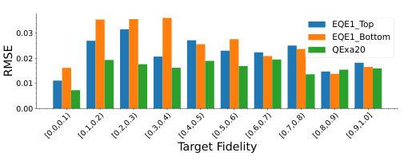
<figcaption class="paper-figure-caption"><b>Fig 4.</b> Fig. 5: RMSE of the model on the test set, grouped by target fidelity.</figcaption>
</figure>
<figure class="paper-figure-card">

<figcaption class="paper-figure-caption"><b>Fig 5.</b> Fig. 4: Coupling maps of the target devices.</figcaption>
</figure>
</div>

<p><strong>Summary.</strong> This paper introduces a novel, low-overhead scheduling framework for quantum circuits running on multi-QPU systems. It uses a Graph Neural Network (GNN) to predict the execution fidelity on various hardware devices before compilation. By incorporating a tunable weight, the scheduler effectively balances the trade-off between achieving the highest possible fidelity and maximizing the utilization of all available quantum processing units.</p>
<p><strong>Why it may be interesting.</strong> This work directly addresses the practical challenges of running quantum algorithms on real, noisy, and heterogeneous hardware, which is a major bottleneck for applying quantum computing to physics simulations.</p>
<details>
<summary>Detailed structure</summary>
<p><strong>Main problem.</strong> The core problem is developing a scheduling framework for quantum circuits on heterogeneous multi-QPU systems that maximizes execution fidelity while balancing this fidelity against the need for high parallelism.</p>
<p><strong>Main result.</strong> The proposed GNN-based framework successfully approximates exhaustive fidelity-based assignment, achieving significant speedups in scheduling overhead compared to brute-force methods while maintaining high mean batch fidelity.</p>
<p><strong>Method.</strong> The authors propose an end-to-end pipeline using a Graph Neural Network (GNN) to predict the expected fidelity of a circuit on any given QPU <em>before</em> compilation. A tunable scheduler then uses this prediction to balance fidelity maximization against workload distribution.</p>
<p><strong>Model / system.</strong> The system involves multi-QPU platforms exposed in HPCQC environments, where each QPU has unique characteristics (size, topology, noise). The input circuit is converted into a graph representation (DAG) for the GNN to process.</p>
<p><strong>Key observables.</strong> Execution Fidelity ($f_{c,d}$), Mean Batch Fidelity, Fidelity Regret ($r(c)$), and Wall-Clock Scheduling Overhead.</p>
<p><strong>Important parameters / regimes.</strong> The tunable scheduling weight $w \in [0, 1]$, which controls the trade-off between fidelity and parallelism.</p>
<p><strong>Assumptions / limitations.</strong> The fidelity calculation used is an approximation that neglects factors like idle-time decoherence, crosstalk, and calibration drift.</p>
<p><strong>Figures summary.</strong> Figures illustrate the end-to-end pipeline, the graph conversion process, and comparisons showing mean ground-truth fidelity vs. weight $w$, and median scheduling cost comparing exhaustive vs. GNN-predicted selection.</p>
<p><strong>Paper structure.</strong> The paper follows a structure detailing the problem (multi-QPU scheduling), presenting the solution (GNN prediction + tunable scheduler), and validating it through rigorous comparisons against exhaustive baselines regarding both fidelity and computational overhead.</p>
</details>
<details>
<summary>Abstract</summary>
<p>High Performance Computing-Quantum Computing (HPCQC) platforms expose multiple Quantum Processing Units (QPUs) that may differ in size, topology, native gates, and noise characteristics. For current noisy devices, errors compound along the compiled circuits quickly, and minimizing them, that is, maximizing the circuits' execution fidelity, is essential for reliable results. Fidelity depends on the compilation to a specific target device: the same high-level circuit may produce different executables and, therefore, different expected fidelities across QPUs. We present a low-overhead fidelity-aware scheduling framework for multi-QPU systems based on a Graph Neural Network (GNN) that estimates, before compilation, the expected fidelity of each circuit on each available QPU. Then, a tunable scheduler uses these estimates to control the trade-off between execution fidelity and parallelism. Results show that this framework allows for approximating an exhaustive fidelity-based assignment, saving computational resources compared to a brute-force approach that compiles each circuit on every device.</p>
</details>
<p><sub><a href="#top">↑ back to top</a></sub></p>

<p><a id="paper-2609.10106"></a></p>
<h3 id="infinite-ergodic-theory-and-functional-statistics-of-non-confined-feller-process"><a href="http://arxiv.org/abs/2609.10106v1">Infinite ergodic theory and functional statistics of non-confined Feller process</a></h3>
<p><strong>Authors:</strong> Vicenç Méndez<br>
<strong>Type:</strong> theory · <strong>Category:</strong> statistical mechanics · <strong>PDF:</strong> <a href="https://arxiv.org/pdf/2609.10106v1">https://arxiv.org/pdf/2609.10106v1</a><br>
<strong>Analysis basis:</strong> full PDF text, analyzed in chunks
<strong>Topic relevance:</strong> <code>non-equilibrium universality</code> <strong>3/5</strong></p>
<div class="figure-strip-hint">↔ Scroll figures horizontally</div>
<div class="paper-figures-scroll">
<figure class="paper-figure-card">
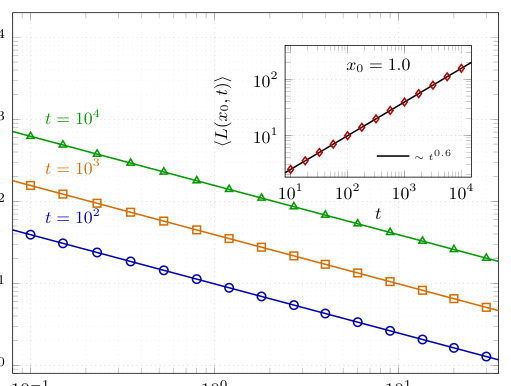
<figcaption class="paper-figure-caption"><b>Fig 1.</b> FIG. 1. Main panel: Log-log plot of the mean local time ⟨L(x, t)⟩as a function of position x for</figcaption>
</figure>
<figure class="paper-figure-card">
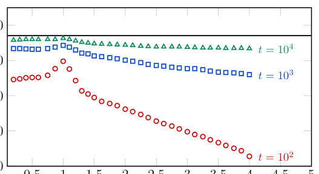
<figcaption class="paper-figure-caption"><b>Fig 2.</b> FIG. 2. Spatial correlation function R(x1, x2, t) as a function of the ratio x2/x1 for x1 = 1.0 and</figcaption>
</figure>
<figure class="paper-figure-card">
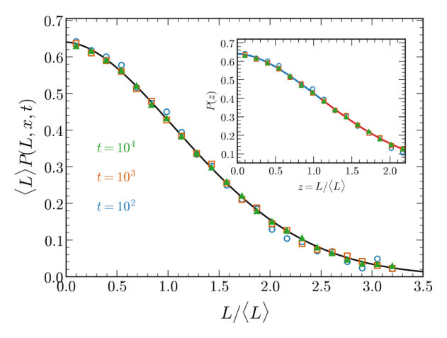
<figcaption class="paper-figure-caption"><b>Fig 3.</b> FIG. 3. Rescaled probability density ⟨L⟩P(L, x, t) versus L/⟨L(x, t)⟩. Symbols represent numerical</figcaption>
</figure>
<figure class="paper-figure-card">

<figcaption class="paper-figure-caption"><b>Fig 4.</b> FIG. 4. (a) Rescaled probability density of Ta(t), ⟨Ta⟩P(Ta, t), as a function of Ta/⟨Ta⟩, compared</figcaption>
</figure>
<figure class="paper-figure-card">
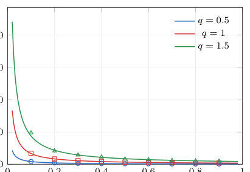
<figcaption class="paper-figure-caption"><b>Fig 5.</b> FIG. 5. Ergodicity breaking parameter of Aq(t) as a function of θ. Solid lines denote theoretical</figcaption>
</figure>
</div>

<p><strong>Summary.</strong> This paper investigates the long-time statistical behavior of a non-confined Feller process, a model exhibiting broken ergodicity. The authors derive an asymptotic factorization for the local-time field, showing its spatial structure is governed by a deterministic profile while temporal fluctuations follow a Mittag-Leffler distribution. This work establishes a unifying framework for analyzing complex, non-equilibrium dynamics in systems with singular invariant measures.</p>
<p><strong>Why it may be interesting.</strong> The concept of infinite ergodic theory and the resulting universal scaling laws for local-time fields provide powerful mathematical tools for understanding non-equilibrium dynamics in complex physical systems, which has parallels in open quantum systems.</p>
<details>
<summary>Detailed structure</summary>
<p><strong>Main problem.</strong> The study focuses on the spatial structure and multi-point correlation properties of the local-time field for non-confined Feller processes within the framework of Infinite Ergodic Theory.</p>
<p><strong>Main result.</strong> The local-time field exhibits an asymptotic spatiotemporal factorization, and normalized spatial correlations converge to a universal constant independent of the observation levels.</p>
<p><strong>Method.</strong> The analysis uses asymptotic methods, including the derivation of factorization laws and the comparison of time averages in ergodic versus non-ergodic regimes.</p>
<p><strong>Model / system.</strong> The primary model is the non-confined Feller process, which is a diffusion process characterized by multiplicative noise and possesses a non-normalizable stationary probability density.</p>
<p><strong>Key observables.</strong> Local-time field L(x, t), occupation times, two-point spatial cross-correlation function, and non-integrable power observables A_q(t).</p>
<p><strong>Important parameters / regimes.</strong> The analysis is focused on the non-confined regime ($0 < 	heta < 1$) and the long-time limit ($t 	o \infty$).</p>
<p><strong>Assumptions / limitations.</strong> The analysis assumes the process can be mapped to a squared Bessel process after deterministic rescaling, and it relies on the framework of infinite ergodic theory.</p>
<p><strong>Figures summary.</strong> Figures illustrate the collapse of probability density functions for occupation times and the convergence of correlation functions to universal constants.</p>
<p><strong>Paper structure.</strong> The paper develops the theory by first establishing the asymptotic factorization of the local-time field, then analyzing the convergence of occupation times, and finally contrasting the scaling behavior of integrable versus non-integrable observables.</p>
</details>
<details>
<summary>Abstract</summary>
<p>We study additive observables of a non-confined Feller process characterized by a non- normalizable stationary probability density and return times with infinite mean. The process is equivalent, after a deterministic rescaling, to a squared Bessel process, but we focus here on a question: the spatial structure of its local-time field. We show that the local time admits a fac- torization in the long time limit. Its spatial profile is governed by the non-normalizable stationary density, whereas its temporal fluctuations are controlled by a single Mittag-Leffler random ampli- tude. As a consequence, normalized spatial correlations of the local time converge to a universal constant independent of the two observation levels. Occupation times of finite intervals follow as corollaries and display Darling-Kac fluctuations. In contrast, non-integrable power observables exhibit self-similar squared-Bessel-type limits rather than Mittag-Leffler statistics. This spatial- field perspective provides a unifying framework for infinite ergodic theory under state-dependent multiplicative noise.</p>
</details>
<p><sub><a href="#top">↑ back to top</a></sub></p>

<p><a id="paper-2609.10514"></a></p>
<h3 id="optimal-low-rank-quantum-state-tomography-with-bounded-sample-joint-measurements"><a href="http://arxiv.org/abs/2609.10514v1">Optimal Low-Rank Quantum State Tomography with Bounded-Sample Joint Measurements</a></h3>
<p><strong>Authors:</strong> Ashwin Nayak, Xingyu Zhou<br>
<strong>Type:</strong> theory · <strong>Category:</strong> quantum information and computing · <strong>PDF:</strong> <a href="https://arxiv.org/pdf/2609.10514v1">https://arxiv.org/pdf/2609.10514v1</a><br>
<strong>Analysis basis:</strong> full PDF text, analyzed in chunks
<strong>Topic relevance:</strong> <code>quantum measurements</code> <strong>3/5</strong></p>
<div class="figure-strip-hint">↔ Scroll figures horizontally</div>
<div class="paper-figures-scroll">
<figure class="paper-figure-card">
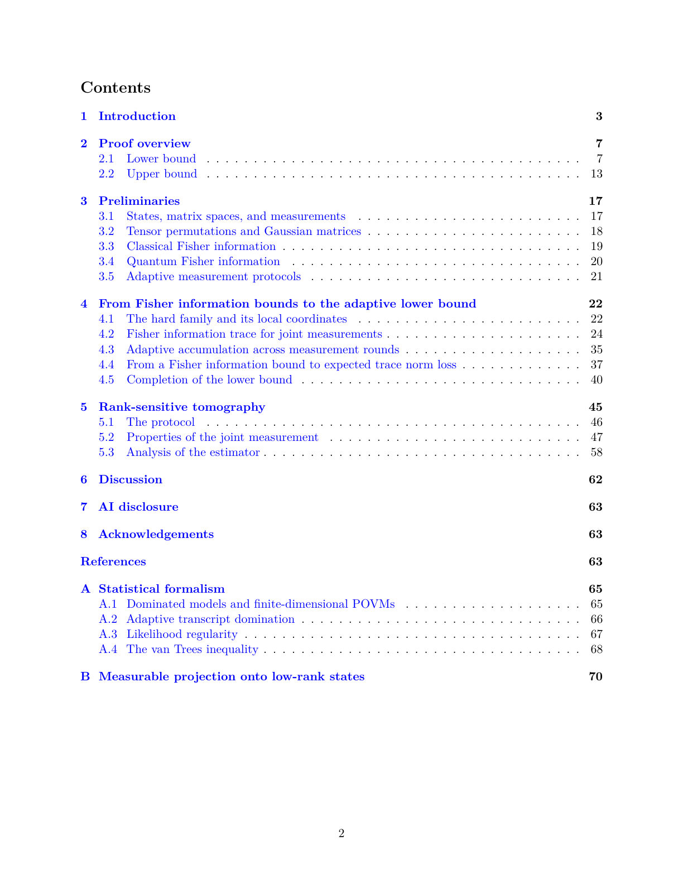
<figcaption class="paper-figure-caption"><b>Fig 1.</b> Low-resolution page preview, page 2</figcaption>
</figure>
<figure class="paper-figure-card">

<figcaption class="paper-figure-caption"><b>Fig 2.</b> Low-resolution page preview, page 3</figcaption>
</figure>
<figure class="paper-figure-card">

<figcaption class="paper-figure-caption"><b>Fig 3.</b> Low-resolution page preview, page 4</figcaption>
</figure>
<figure class="paper-figure-card">

<figcaption class="paper-figure-caption"><b>Fig 4.</b> Low-resolution page preview, page 5</figcaption>
</figure>
<figure class="paper-figure-card">
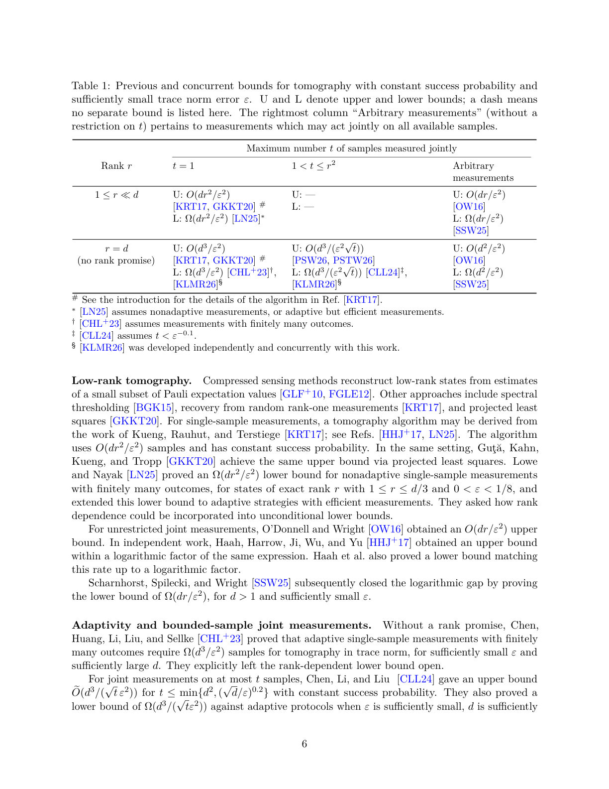
<figcaption class="paper-figure-caption"><b>Fig 5.</b> Low-resolution page preview, page 6</figcaption>
</figure>
</div>

<p><strong>Summary.</strong> This work establishes the optimal sample complexity for reconstructing low-rank quantum states using limited joint measurements. It derives a precise scaling law dependent on the state rank, ambient dimension, and the maximum number of samples per measurement. The results provide crucial theoretical benchmarks for quantum state tomography protocols.</p>
<p><strong>Why it may be interesting.</strong> It provides rigorous, quantitative bounds on the experimental resources (samples) needed to characterize quantum states, which is fundamental for designing quantum characterization experiments in any quantum platform.</p>
<details>
<summary>Detailed structure</summary>
<p><strong>Main problem.</strong> The paper determines the optimal sample complexity required for low-rank quantum state tomography when measurements are restricted to jointly sampling at most $t$ instances.</p>
<p><strong>Main result.</strong> The required sample complexity is $\Theta\left(rac{dr}{\epsilon^2} \max\left(1, rac{r}{\sqrt{t}}
ight)
ight)$, establishing a matching lower and upper bound.</p>
<p><strong>Method.</strong> The lower bound uses the van Trees inequality applied to the Fisher information trace, while the upper bound constructs a nonadaptive protocol based on Gaussian joint measurements.</p>
<p><strong>Model / system.</strong> The system is an unknown quantum state $
ho$ on $\mathbb{C}^d$ assumed to have a rank of at most $r$. The goal is to estimate this state to a trace norm error $\epsilon$ using measurements that jointly sample up to $t$ instances.</p>
<p><strong>Key observables.</strong> Trace norm error ($\epsilon$), sample complexity ($n$), Fisher information trace.</p>
<p><strong>Important parameters / regimes.</strong> Ambient dimension ($d$), state rank ($r$), maximum joint samples ($t$), target error ($\epsilon$).</p>
<p><strong>Assumptions / limitations.</strong> The analysis assumes the protocol can choose measurements adaptively (for the lower bound) and considers the case of sufficiently small $\epsilon$.</p>
<p><strong>Figures summary.</strong> Not specified.</p>
<p><strong>Paper structure.</strong> The paper develops the lower bound using adaptive Fisher chain rules and the van Trees inequality, and establishes the matching upper bound via a nonadaptive Gaussian joint measurement protocol.</p>
</details>
<details>
<summary>Abstract</summary>
<p>We determine the optimal sample complexity of low-rank quantum state tomography when each measurement may act jointly on at most $t$ samples. For sufficiently small $\varepsilon$, estimating an unknown state on $\mathbb{C}^d$ of rank at most $r$ to trace norm error $\varepsilon$ with constant success probability requires, and is achievable with, $$   Θ\left(   \frac{dr}{\varepsilon^2}   \max\left\{1,\frac r{\sqrt t}\right\}   \right)$$ samples. The lower bound allows the protocol to choose each joint measurement adaptively using all previous classical outcomes; the matching upper bound is nonadaptive. Thus joint measurements on at most $t$ samples improve the complexity of algorithms making single-sample measurements by at most a factor $\sqrt t$. Further, measuring order $r^2$ samples jointly is necessary and sufficient to attain the unrestricted collective rate.   For the lower bound, we vary the support of a state with fixed uniform spectrum and bound the Fisher information trace of every joint measurement on $t$ samples. The adaptive Fisher chain rule and the van Trees inequality then give the trace norm lower bound. For the upper bound, we construct and analyze a nonadaptive tomography protocol based on a Gaussian joint measurement. An explicit second moment identity and a conditional Gaussian law outside the state's support give a rank-dependent error analysis, yielding the matching rate.</p>
</details>
<p><sub><a href="#top">↑ back to top</a></sub></p>

<p><a id="paper-2609.09654"></a></p>
<h3 id="perfect-state-transfer-from-a-localised-two-excitation-state-to-a-dicke-state-via-static-spin-network-hamiltonians"><a href="http://arxiv.org/abs/2609.09654v1">Perfect State Transfer from a Localised Two-Excitation State to a Dicke State via Static Spin-Network Hamiltonians</a></h3>
<p><strong>Authors:</strong> Soumyojyoti Dutta<br>
<strong>Type:</strong> theory · <strong>Category:</strong> quantum information and computing · <strong>PDF:</strong> <a href="https://arxiv.org/pdf/2609.09654v1">https://arxiv.org/pdf/2609.09654v1</a><br>
<strong>Analysis basis:</strong> full PDF text, analyzed in chunks
<strong>Topic relevance:</strong> <code>analog quantum simulation</code> <strong>3/5</strong></p>
<div class="figure-strip-hint">↔ Scroll figures horizontally</div>
<div class="paper-figures-scroll">
<figure class="paper-figure-card">
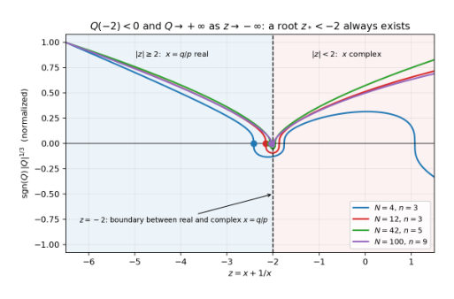
<figcaption class="paper-figure-caption"><b>Fig 1.</b> FIG. 1. The cubic Q(z) for four system sizes, plotted as sgn(Q) |Q|1/3 so that the crossing is visible against the cu- bic growth, and normalised to unit maximum on the window shown. The dashed line marks z = −2, the boundary be- tween real and complex x = q/p; x is real only in the shaded regions |z| ≥2. In every case Q(−2) &lt; 0 (Lemma 4), while A &lt; 0 — which Lemma 5 supplies for n large enough — makes Q(z) →+∞as z →−∞. A real root z∗&lt; −2 follows; the markers show it.</figcaption>
</figure>
<figure class="paper-figure-card">

<figcaption class="paper-figure-caption"><b>Fig 2.</b> FIG. 2. Transfer residual ∥e−iHe0 −v∥and eigenvector resid- ual ∥Hx+∥for the Hamiltonian produced by the construction of Theorem 1, for every N = 4, . . . , 102. All 99 cases succeed at machine precision. These are an independent check of a symbolic construction, not evidence for the theorem.</figcaption>
</figure>
<figure class="paper-figure-card">
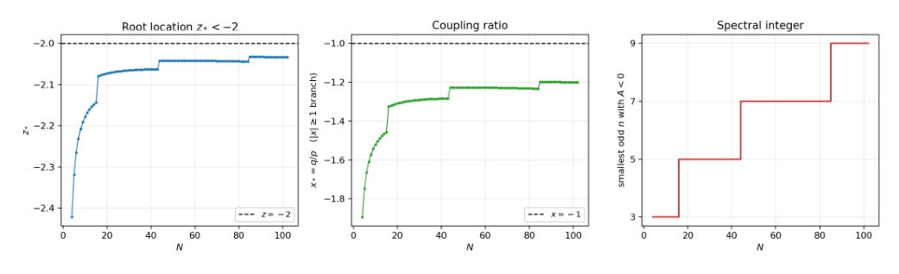
<figcaption class="paper-figure-caption"><b>Fig 3.</b> FIG. 3. Numerical behaviour of the construction across N. For a given n the sextic may have several admissible roots; here one is fixed by the convention of taking the most negative z∗&lt; −2 for the smallest odd n with A &lt; 0. This is a numerical convention and not a distinguished branch — the theorem asserts only that some admissible root exists — and it is discontinuous where n increments. Left: the root z∗stays below −2 as required. Centre: the corresponding coupling ratio x∗= q/p, on the |x| ≥1 representative of the reciprocal pair {x∗, 1/x∗} exchanged by the p ↔q symmetry of Eq. (13). Right: the smallest odd n satisfying A &lt; 0 remains small, taking only the values 3, 5, 7, 9 over this...</figcaption>
</figure>
</div>

<p><strong>Summary.</strong> This paper constructs a static, real-valued spin-network Hamiltonian that perfectly transfers a localized two-excitation state to the symmetric Dicke state for any system size $N \ge 4$. The existence proof is purely symbolic, relying on solving polynomial equations derived from symmetry constraints. It offers a novel, fixed-Hamiltonian approach to quantum state transfer, contrasting with time-dependent or measurement-based protocols.</p>
<p><strong>Why it may be interesting.</strong> This work provides a purely algebraic, non-optimization-based construction for achieving quantum state transfer using a fixed Hamiltonian, which is highly valuable for designing physical quantum simulators or quantum computing architectures.</p>
<details>
<summary>Detailed structure</summary>
<p><strong>Main problem.</strong> The paper aims to construct a time-independent, excitation-preserving spin Hamiltonian that achieves Perfect State Transfer (PST) from a localized two-excitation state to the symmetric two-excitation Dicke state for any system size $N \ge 4$.</p>
<p><strong>Main result.</strong> The authors prove the existence of such a Hamiltonian for all $N \ge 4$ using purely symbolic mathematical methods, establishing a constrained analogue of PST.</p>
<p><strong>Method.</strong> The construction involves exploiting an $S_{N-2}$ permutation symmetry to reduce the dynamics to a 4D subspace, followed by solving an inverse spectral problem that reduces to finding a real root of a cubic polynomial.</p>
<p><strong>Model / system.</strong> The system is an $N$-qubit spin chain governed by a spin-network Hamiltonian $H = \sum_{i<j} J_{ij} (\sigma_i^+ \sigma_j^- + \sigma_j^+ \sigma_i^-) + \sum_i \epsilon_i n_i$. The dynamics are confined to the two-excitation sector.</p>
<p><strong>Key observables.</strong> The transfer fidelity, which must equal 1, and the required spectral structure $\{(-n, -1, 0, 1)\pi\}$ for the Hamiltonian eigenvalues.</p>
<p><strong>Important parameters / regimes.</strong> System size $N \ge 4$, the odd integer parameter $n$, and the free coupling parameters determined by solving the polynomial equations.</p>
<p><strong>Assumptions / limitations.</strong> The Hamiltonian must arise from an excitation-preserving spin-network form, which is a stricter constraint than general real symmetric matrices. The result is only proven for two excitations ($k=2$).</p>
<p><strong>Figures summary.</strong> Figures illustrate the existence of a required real root $z^* < -2$ via sign analysis (Intermediate Value Theorem) and show numerical validation of the construction for $N=4$ to $102$ with small residuals.</p>
<p><strong>Paper structure.</strong> The paper establishes the physical problem, reduces the dynamics using symmetry, formulates the problem as an inverse spectral problem, solves the resulting polynomial equations symbolically to prove existence, and concludes by comparing this static method to other PST protocols.</p>
</details>
<details>
<summary>Abstract</summary>
<p>I construct a family of time-independent, excitation-preserving spin Hamiltonians that realises perfect state transfer from a localised two-excitation state to the symmetric two-excitation Dicke state, for every system size $N \ge 4$. The Hamiltonian has the physical form $H = \sum_{i<j} J_{ij} (σ_i^+ σ_j^- + σ_j^+ σ_i^-) + \sum_i ε_i n_i$ with real couplings, and satisfies $e^{-iHt} |110\cdots0\rangle = e^{iφ} |D_N^{(2)}\rangle$ at a finite time. The construction exploits an $S_{N-2}$ permutation symmetry acting on the initially unoccupied spins, which reduces the dynamics to a four-dimensional invariant subspace. Requiring $(|ψ_0\rangle + |D_N^{(2)}\rangle)/2$ to be a zero eigenvector determines the on-site energies in closed form and leaves three coupling parameters free. The remaining inverse spectral problem reduces to two polynomial equations in two dimensionless coupling ratios; eliminating one ratio yields a degree-six reciprocal polynomial, which the substitution $z = x + x^{-1}$ converts to a cubic. For the spectral family $(-n,-1,1)$, with $n$ an odd integer, an explicit factorisation of the leading coefficient together with a boundary evaluation at $z=-2$ shows that for every $N \ge 4$ an odd $n$ can be chosen large enough that a real root with $z < -2$ exists; a subresultant argument supplies a real lift of that root to the original system. The existence proof is entirely symbolic and does not rely on numerical optimisation; direct propagation is used only as independent validation. The result is a constrained analogue of perfect state transfer: unlike the general real-state problem, where an unconstrained real symmetric matrix suffices, here the Hamiltonian is required to arise from an excitation-preserving spin-network form.</p>
</details>
<p><sub><a href="#top">↑ back to top</a></sub></p>

<p><a id="paper-2609.10383"></a></p>
<h3 id="quantifying-information-hierarchy-for-neutrino-oscillation-parameters-at-juno"><a href="http://arxiv.org/abs/2609.10383v1">Quantifying Information Hierarchy for Neutrino Oscillation Parameters at JUNO</a></h3>
<p><strong>Authors:</strong> Yu-han Shu, Neetu Raj Singh Chundawat, Luis A. Delgadillo, Yu-Feng Li<br>
<strong>Type:</strong> theory · <strong>Category:</strong> other · <strong>PDF:</strong> <a href="https://arxiv.org/pdf/2609.10383v1">https://arxiv.org/pdf/2609.10383v1</a><br>
<strong>Analysis basis:</strong> full PDF text, analyzed in chunks
<strong>Topic relevance:</strong> <code>quantum measurements</code> <strong>3/5</strong></p>
<div class="figure-strip-hint">↔ Scroll figures horizontally</div>
<div class="paper-figures-scroll">
<figure class="paper-figure-card">

<figcaption class="paper-figure-caption"><b>Fig 1.</b> FIG. 1. Diagonal Fisher-information elements for JUNO with 3% energy resolution including signal and background contributions, shown for NO. Each subplot corresponds to one oscillation parameter: θ12, θ13, ∆m2 21, and ∆m2 31. The upper panels show the event-weighted QFI eFQ αα, the event-weighted electron flavor-FI eF¯e¯e αα, and the event-level Fisher information Fevent αα as functions of the true antineutrino energy Eν. The lower panels show the corresponding information fractions, eF¯e¯e αα/eFQ αα(blue) and Fevent αα /eFQ αα (purple).</figcaption>
</figure>
<figure class="paper-figure-card">

<figcaption class="paper-figure-caption"><b>Fig 2.</b> FIG. 2. Relative 1σ precision for the four oscillation parameters in JUNO, comparing diagonal and marginalized constraints for both NO and IO, as well as energy resolutions of 3% and 3.5%. The diagonal values are extracted from the diagonal elements of the Fisher information matrix, while the marginalized values account for correlations via the inverse of the full Fisher matrix. Blue diamond markers indicate the statistics-only precision, whereas star markers denote the full statistics plus systematics projected six-year precision reported by the JUNO Collaboration [26].</figcaption>
</figure>
<figure class="paper-figure-card">
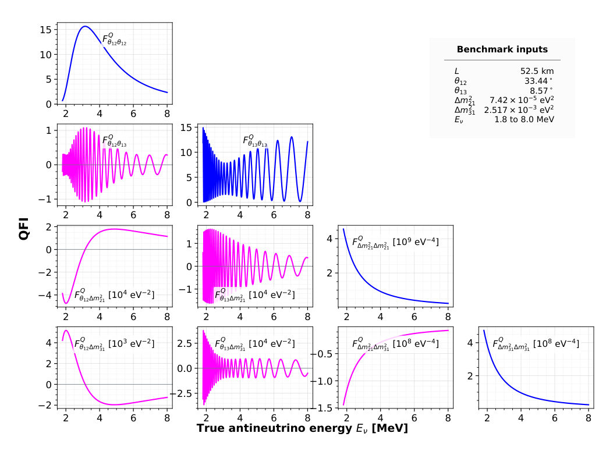
<figcaption class="paper-figure-caption"><b>Fig 3.</b> FIG. 3. Energy dependence of the single-neutrino QFI matrix elements for an electron antineutrino propagating in vacuum at the JUNO baseline.</figcaption>
</figure>
<figure class="paper-figure-card">
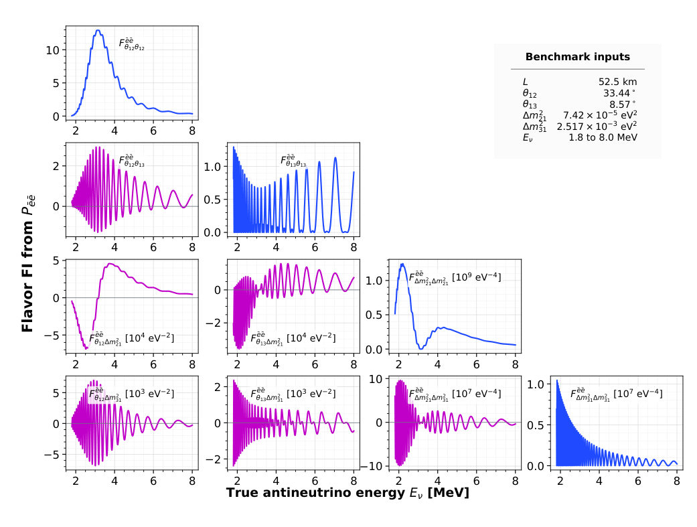
<figcaption class="paper-figure-caption"><b>Fig 4.</b> FIG. 4. Energy dependence of the ten independent elements of the electron-flavor Fisher information matrix obtained from the survival probability P¯e¯e for the four oscillation parameters considered in the JUNO analysis.</figcaption>
</figure>
</div>

<p><strong>Summary.</strong> This work develops an 'information ladder' to quantify how well neutrino oscillation parameters can be measured using reactor antineutrinos at the JUNO experiment. By comparing Quantum, Flavor, and Event-level Fisher Information, the authors show that while some parameters are well-constrained, others suffer significant information loss due to detector limitations. Despite this, the remaining information is sufficient for high-precision measurements.</p>
<p><strong>Why it may be interesting.</strong> The rigorous application of quantum information theory (QFI) to particle physics measurements provides a powerful, general framework for assessing experimental limits, which is relevant for any field involving quantum state estimation.</p>
<details>
<summary>Detailed structure</summary>
<p><strong>Main problem.</strong> The paper quantifies how information about neutrino oscillation parameters is encoded in the quantum state and how efficiently this information can be extracted through measurement.</p>
<p><strong>Main result.</strong> While information on solar parameters approaches the optimal statistical limit, information on $\theta_{13}$ and $\Delta m_{31}^{2}$ is significantly degraded by detector effects, though sufficient for sub-percent precision on $\Delta m_{31}^{2}$ at JUNO.</p>
<p><strong>Method.</strong> It establishes an 'information ladder' by comparing three levels of Fisher Information: Quantum Fisher Information (QFI), classical flavor Fisher information, and event-level Fisher information.</p>
<p><strong>Model / system.</strong> The analysis uses the framework of neutrino oscillations, specifically modeling reactor antineutrino states propagating to the JUNO detector baseline.</p>
<p><strong>Key observables.</strong> The relative information retained at different levels ($   ext{e}F_{   ext{flavor}}/   ext{e}F_{   ext{Q}}$ and $F_{	ext{event}}/F_{	ext{Q}}$) and the resulting $1\sigma$ precision for the oscillation parameters.</p>
<p><strong>Important parameters / regimes.</strong> Oscillation parameters: $\theta_{12}, \theta_{13}, \Delta m_{21}^2, \Delta m_{31}^2$. The analysis is performed for the JUNO setup (20 kton, 52.5 km, 6 years).</p>
<p><strong>Assumptions / limitations.</strong> The analysis models energy resolution using a Gaussian function and neglects matter effects in some calculations.</p>
<p><strong>Figures summary.</strong> Figures illustrate the energy dependence of the diagonal Fisher-information elements for the four parameters across the three information levels, showing the hierarchy and parameter dependence.</p>
<p><strong>Paper structure.</strong> The paper develops the theoretical framework by deriving the QFI matrix elements, compares this to the flavor-FI derived from the survival probability, and finally incorporates detector effects to yield the event-level FI, establishing the information hierarchy.</p>
</details>
<details>
<summary>Abstract</summary>
<p>Since neutrinos are quantum systems inherently, the precision with which oscillation parameters can be estimated ultimately depends on how much information about these parameters is encoded in the neutrino state and how efficiently that information can be extracted through measurement. In this work, we quantify how information encoded in reactor antineutrino states flows through the measurement process to the events observed at the detector, using quantum and classical Fisher information. We establish the information ladder for JUNO, revealing that the loss of precision across different information levels is strongly parameter dependent. We demonstrate that the JUNO configuration approaches the optimal statistical limit for the oscillation parameters of the solar sector, while information on $θ_{13}$ and $Δm_{31}^{2}$ is significantly degraded by the measurement strategy and detector effects. Despite this information loss, the remaining information is sufficient for JUNO to achieve sub-percent precision on $Δm_{31}^{2}$ within six years.</p>
</details>
<p><sub><a href="#top">↑ back to top</a></sub></p>

<p><a id="paper-2609.09996"></a></p>
<h3 id="sim-graph-a-universal-guide-to-symmetric-interactions"><a href="http://arxiv.org/abs/2609.09996v1">SIM-GRAPH: A universal guide to symmetric interactions</a></h3>
<p><strong>Authors:</strong> R. C. Verstraten, C. Morais Smith<br>
<strong>Type:</strong> theory · <strong>Category:</strong> strongly correlated electrons · <strong>PDF:</strong> <a href="https://arxiv.org/pdf/2609.09996v1">https://arxiv.org/pdf/2609.09996v1</a><br>
<strong>Analysis basis:</strong> full PDF text, analyzed in chunks
<strong>Topic relevance:</strong> <code>analog quantum simulation</code> <strong>3/5</strong></p>
<div class="figure-strip-hint">↔ Scroll figures horizontally</div>
<div class="paper-figures-scroll">
<figure class="paper-figure-card">
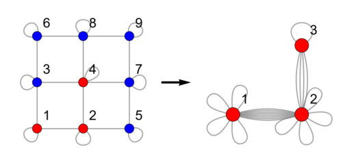
<figcaption class="paper-figure-caption"><b>Fig 1.</b> FIG. 1. Graph reduction of a 3x3 square lattice with NN (links) and local (loops) interactions. The symmetry group is generated by a 90 degree rotation along site 4. The three dis- tinct symmetric representations Si are highlighted in red on the left hand side. On the right hand side, we see the reduced graph, where all interactions are projected to the symmetric subset and the other sites are removed. The remaining sites are relabeled to a counting order.</figcaption>
</figure>
<figure class="paper-figure-card">
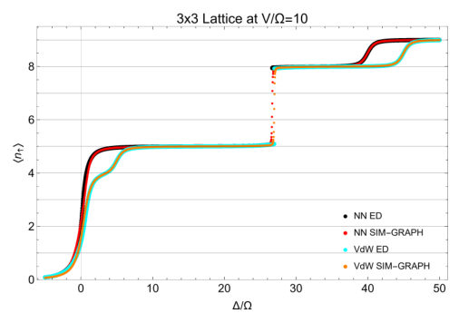
<figcaption class="paper-figure-caption"><b>Fig 2.</b> FIG. 2. The average ground-state magnetization of the TFIM on the 3 × 3 square lattice is presented at V/Ω= 10 for both NN and VdW interactions, computed using both ED and SIM-GRAPH. For better visual comparison, the exact results are plotted using larger points, with the SIM-GRAPH results overlaid in points half the size. For both NN and VdW interactions, we find excellent agreement with only minor de- viations from the exact results.</figcaption>
</figure>
<figure class="paper-figure-card">
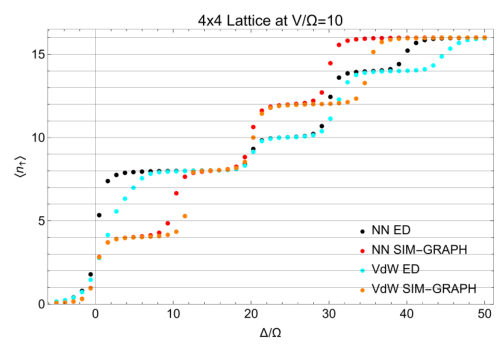
<figcaption class="paper-figure-caption"><b>Fig 3.</b> FIG. 3. The average ground-state magnetization of the TFIM on the 4 × 4 square lattice is presented at V/Ω= 10 for both NN and VdW interactions, computed on 50 points using both ED and SIM-GRAPH. For both NN and VdW interactions, we find deviations up to 4 spins away from the exact results. Besides the high and low ∆/Ωlimits, we find only one region of agreement at ⟨n↑⟩= 8, which corresponds to the checker- board states.</figcaption>
</figure>
<figure class="paper-figure-card">

<figcaption class="paper-figure-caption"><b>Fig 4.</b> FIG. 4. (a) The NN interaction graph for a chain of 6 spins. The dashed green line indicates the symmetry axis. (b) The reduced graph based on SIM1. (c) Opening of the 3 to 4 link, which allows for a superposition across the symmetry axis. (d) The reduced graph based on SIM2.1. In (b)-(d), the red highlight indicates the difference between SIM1 and SIM2.1.</figcaption>
</figure>
<figure class="paper-figure-card">

<figcaption class="paper-figure-caption"><b>Fig 5.</b> FIG. 5. The NN interaction graph for a chain of 3 spins is shown and projected according to the SIM-GRAPH proce- dure. Here, ˆΩ= ΩP</figcaption>
</figure>
</div>

<p><strong>Summary.</strong> This paper introduces SIM-GRAPH, a novel computational method that leverages underlying symmetries in quantum Hamiltonians to drastically reduce the effective size of the system being simulated. By projecting interactions onto a symmetric subspace, it achieves an exponential speedup over standard exact diagonalization for calculating ground-state properties. It is highly valuable for studying large, interacting quantum spin systems like the TFIM on various complex lattices.</p>
<p><strong>Why it may be interesting.</strong> The technique of exploiting underlying symmetries to reduce the effective dimensionality of the Hilbert space is highly relevant for simulating complex quantum materials where symmetries are known or suspected.</p>
<details>
<summary>Detailed structure</summary>
<p><strong>Main problem.</strong> The primary challenge is efficiently calculating ground-state observables of interacting quantum many-body systems, which typically suffer from exponentially scaling Hilbert space dimensions.</p>
<p><strong>Main result.</strong> The SIM-GRAPH method provides an exponential speedup over standard exact diagonalization by projecting interactions onto a symmetry-reduced graph, achieving high accuracy on various lattices.</p>
<p><strong>Method.</strong> The method, SIM-GRAPH, maps the Hamiltonian onto a graph, uses group theory to identify symmetries, and constructs a symmetry-reduced Hamiltonian by projecting interactions onto the symmetric subset of sites.</p>
<p><strong>Model / system.</strong> The method is applied to interacting quantum many-body systems, specifically modeling the Transverse Field Ising Model (TFIM) on various lattices (1D chains, 2D square lattices, Sierpinski triangles).</p>
<p><strong>Key observables.</strong> Ground-state observables, notably the average ground-state magnetization ($\langle n_\uparrow 
angle$).</p>
<p><strong>Important parameters / regimes.</strong> The ratio of transverse field ($\Omega$) to coupling strength ($\Delta$), and the size/geometry of the lattice (e.g., 3x3, 4x4).</p>
<p><strong>Assumptions / limitations.</strong> The method is projective, meaning computed eigenenergies are guaranteed to be greater than or equal to the true eigenenergies, and it assumes that the ground state can be accurately represented by the symmetric subspace.</p>
<p><strong>Figures summary.</strong> Figures illustrate the graph reduction process for lattices (e.g., 3x3), compare ground-state magnetization vs. field ratio for different lattices (1D and 2D), and show convergence studies using various SIM2.n methods.</p>
<p><strong>Paper structure.</strong> The paper introduces SIM-GRAPH, details its application to the TFIM on various geometries (1D, 2D, Sierpinski), and systematically compares its results against Exact Diagonalization (ED) using increasingly refined projection techniques (SIM2.n and SIM3).</p>
</details>
<details>
<summary>Abstract</summary>
<p>Symmetry plays a central role throughout physics, from Fourier analysis on discrete lattices to the classification of elementary particles in the standard model. In finite quantum systems, symmetries are often discrete, such as reflection and rotational symmetries. Here, we present the SIM-GRAPH method (Symmetric Ising Models - Graph Reduction And Projected Hamiltonians), which uses such symmetries to efficiently calculate ground-state observables of interacting quantum systems. By projecting all interactions onto a symmetric subset of the system, the method effectively reduces the number of sites, thus providing an exponential speedup over standard exact diagonalization. Furthermore, we introduce two extensions that broaden the applicability of the method and allow for a controlled trade-off between computational cost and accuracy.</p>
</details>
<p><sub><a href="#top">↑ back to top</a></sub></p>

<p><a id="paper-2609.09375"></a></p>
<h3 id="tuning-charge-density-wave-transitions-through-lattice-strain-in-nbse3"><a href="http://arxiv.org/abs/2609.09375v1">Tuning Charge Density Wave transitions through lattice strain in NbSe3</a></h3>
<p><strong>Authors:</strong> Antoine Gallo Frantz, Aleksander Sinchenko, Luc Ortega, Pavel Grigoriev, Vladislav Kochev, Pierre Godard, Pierre Olivier Renault, Dominique Thiaudiere, David Le Bolloch, Vincent Jacques<br>
<strong>Type:</strong> experiment · <strong>Category:</strong> strongly correlated electrons · <strong>PDF:</strong> <a href="https://arxiv.org/pdf/2609.09375v1">https://arxiv.org/pdf/2609.09375v1</a><br>
<strong>Analysis basis:</strong> full PDF text, analyzed in chunks
<strong>Topic relevance:</strong> <code>Frenkel-Kontorova</code> <strong>3/5</strong></p>
<div class="figure-strip-hint">↔ Scroll figures horizontally</div>
<div class="paper-figures-scroll">
<figure class="paper-figure-card">

<figcaption class="paper-figure-caption"><b>Fig 1.</b> FIG. 1. NbSe3 crystal structure with a) the three different types of prisms for type I, II and III chains. b) 3D crys- tal structure made of three different and weakly coupled 1D chains along b. c) Projection of the unit cell in the (a, c) plane.</figcaption>
</figure>
<figure class="paper-figure-card">
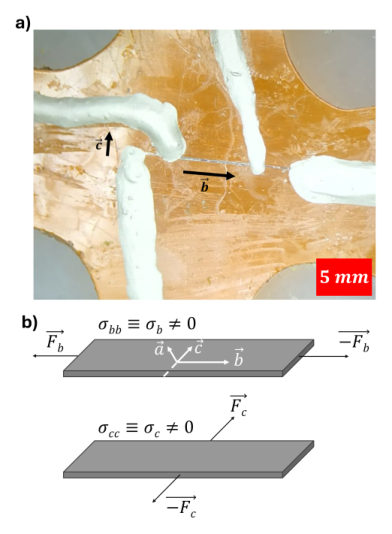
<figcaption class="paper-figure-caption"><b>Fig 2.</b> FIG. 2. a) NbSe3 sample (narrow metallic-grey line) glued on the cross-shaped deformable substrate with the b and c crys- tallographic axis aligned with the substrate branches. Four silver paint electrical contact are made for current injection and voltage measurement in four-bar geometry. b) Schematic drawing of NbSe3 under applied stresses along b and c.</figcaption>
</figure>
<figure class="paper-figure-card">

<figcaption class="paper-figure-caption"><b>Fig 3.</b> FIG. 3. Normalized intensities obtained around the 800, 8¯10 and 601 Bragg reflections at 300 K as a function of 2θ for different sets of applied stresses: ∼20 N along b only (green curves), ∼20 N along c only (blue curves) and without stress (black curves). Each Bragg reflection displays two peaks cor- responding to the two components Kα1 and Kα2 of the x-ray beam.</figcaption>
</figure>
<figure class="paper-figure-card">

<figcaption class="paper-figure-caption"><b>Fig 4.</b> FIG. 4. Evolution of the 6 lattice parameters a, b, c, α, β and γ as a function -Fb and Fc. Two different linear functions are used to fit the curves as a function of -Fb and Fc (colored dashed lines) for all curves. A black dashed line corresponding to the average angles is plotted for α, β and γ.</figcaption>
</figure>
<figure class="paper-figure-card">
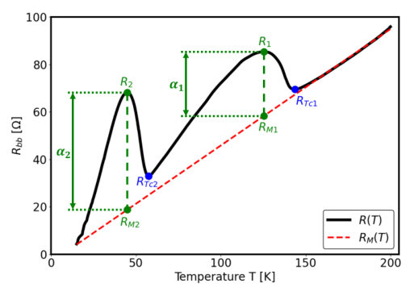
<figcaption class="paper-figure-caption"><b>Fig 5.</b> FIG. 5. R(T) curve measured in the pristine state (black solid line) and linear extrapolation RM(T) from the metallic part of R(T) (red dotted line). The resistance values at critical temperatures RT c1 and RT c2 are marked with blue dots while the resistance increments α1 and α2 and the resistance values R1, R2, RM1 and RM2 used to compute them (see text) are marked with green dots.</figcaption>
</figure>
</div>

<p><strong>Summary.</strong> This work experimentally demonstrates that applying mechanical strain to the CDW material NbSe3 can tune its electronic phase transitions. By combining XRD and transport measurements, the authors establish a strong, quantifiable link between the material's lattice structure and the critical temperatures of the CDW states. This highlights the profound interplay between lattice dynamics and electronic correlations in low-dimensional conductors.</p>
<p><strong>Why it may be interesting.</strong> The strong coupling observed between mechanical strain (a classical/structural input) and the electronic phase transition temperature (CDW) provides a tangible experimental platform for studying emergent quantum phases in correlated materials.</p>
<details>
<summary>Detailed structure</summary>
<p><strong>Main problem.</strong> The study investigates how applying mechanical lattice strain tunes the Charge Density Wave (CDW) transitions in the quasi-one-dimensional material NbSe3.</p>
<p><strong>Main result.</strong> The CDW critical temperatures ($T_{c1}$ and $T_{c2}$) are found to be strongly correlated with the applied lattice strain and resulting lattice parameters, demonstrating a direct coupling between structure and electronic phase transitions.</p>
<p><strong>Method.</strong> The research combines in-situ X-ray diffraction (XRD) measurements under uniaxial tensile stress with electrical transport measurements to probe both structural changes and electronic properties.</p>
<p><strong>Model / system.</strong> The system is NbSe3, a prototypical quasi-one-dimensional conductor exhibiting multiple CDW transitions. The analysis involves relating macroscopic mechanical properties (Young's moduli, Poisson's coefficients) to the electronic susceptibility and CDW critical temperatures.</p>
<p><strong>Key observables.</strong> CDW critical temperatures ($T_{c1}, T_{c2}$), lattice parameters ($a, b, c$), electrical resistance $R(T)$, and elastic constants (Young's moduli, Poisson's coefficients).</p>
<p><strong>Important parameters / regimes.</strong> Applied tensile stresses ($\sigma_b, \sigma_c$), strain ($\epsilon$), and the characteristic temperatures of the two CDW transitions (145 K and 59 K).</p>
<p><strong>Assumptions / limitations.</strong> The analysis assumes linear elastic behavior and that shear strains are negligible during the deformation process.</p>
<p><strong>Figures summary.</strong> Figures illustrate the evolution of lattice parameters and XRD intensities under applied stresses, and show the temperature dependence of resistance curves ($R(T)$) before and after stress application.</p>
<p><strong>Paper structure.</strong> The paper proceeds by first characterizing the mechanical response of NbSe3 under strain using XRD, then correlating these structural changes with the observed shifts in the CDW transition temperatures derived from transport measurements, and finally discussing the underlying electronic mechanisms.</p>
</details>
<details>
<summary>Abstract</summary>
<p>The Charge Density Wave (CDW) state is a perfect example of a combined structural and electronic state, both characterized by a periodic lattice distortion and an electronic modulation of condensed electrons, resulting from electron-phonon coupling. They are thus prone to be tuned by lattice strain. NbSe3 is a prototypical example of CDW states, with a chain-like structure displaying two CDWs at 145K and 59K, with wavevectors along and inclined with respect to the chain axis b. Here, we report on the evolution of the lattice structure and CDW properties in the quasi-one-dimensional charge-density-wave system NbSe3 under tensile stresses applied along and perpendicular to the chains axis b by a combination of X-ray diffraction and transport measurements. We find that the lattice structure show exotic Poissons coefficients and strongly anisotropic Youngs moduli while the evolution of the electrical resistance demonstrates shifts of both charge-density-wave critical temperatures that are strongly correlated with the lattice parameters. The two CDW transitions display different behaviours under applied stresses, and suggest that a modification of the band curvature leads to the observed transport signatures.</p>
</details>
<p><sub><a href="#top">↑ back to top</a></sub></p>

<p><a id="paper-2609.10188"></a></p>
<h3 id="topology-dependent-mixing-of-knots-in-flexible-polymer-chains"><a href="http://arxiv.org/abs/2609.10188v1">Topology-dependent mixing of knots in flexible polymer chains</a></h3>
<p><strong>Authors:</strong> Souradeep Sengupta, Garima Mishra<br>
<strong>Type:</strong> theory · <strong>Category:</strong> statistical mechanics · <strong>PDF:</strong> <a href="https://arxiv.org/pdf/2609.10188v1">https://arxiv.org/pdf/2609.10188v1</a><br>
<strong>Analysis basis:</strong> full PDF text, analyzed in chunks
<strong>Topic relevance:</strong> <code>analog quantum simulation</code> <strong>2/5</strong> · <code>driven-dissipative phase transition</code> <strong>2/5</strong> · <code>methods for driven-dissipative</code> <strong>2/5</strong> · <code>non-equilibrium universality</code> <strong>2/5</strong> · <code>Frenkel-Kontorova</code> <strong>1/5</strong> · <code>Keldysh / 2PI / non-Gaussian methods</code> <strong>1/5</strong> · <code>quantum measurements</code> <strong>1/5</strong> · <code>scars &amp; prethermalization</code> <strong>1/5</strong></p>
<div class="figure-strip-hint">↔ Scroll figures horizontally</div>
<div class="paper-figures-scroll">
<figure class="paper-figure-card">

<figcaption class="paper-figure-caption"><b>Fig 1.</b> Figure 2: Probability distributions P(∆b) of the contour-based knot-separation coordinate for two knot pairs: (a) 31 ⊗31 and (b) 31 ⊗51, both initialized from partially overlapping configurations. The coordinate ∆b characterizes the relative contour organization of the localized knot regions. For classification, configurations with ∆b &lt; ∆bc are assigned to the mixed configuration, whereas those with ∆b &gt; ∆bc are assigned to the demixed configuration, where ∆bc ≃−20. Homogeneous knots (31 ⊗31) exhibit greater statistical weight in the demixed region than heterogeneous knots (31 ⊗51) at fixed normalized wall distances (x = 0.15). (The histograms are smoothed using a Gaussian kernel density...</figcaption>
</figure>
<figure class="paper-figure-card">

<figcaption class="paper-figure-caption"><b>Fig 2.</b> Figure 1: Schematic definition of the contour-based knot-separation coordinate ∆b. Orange and green markers denote the starting and terminal beads, respectively. (a) In a demixed configuration, the localized knot regions are separated along the polymer contour, and ∆b = b(s) 2 −b(t) 1 &gt; 0 gives the contour gap between them. (b) In a fully mixed configuration, the outer boundaries define a composite knotted region, while one constituent knot is independently localized within it. In this case, ∆b = b(s) comp −b(t) nest &lt; 0, and |∆b| provides a boundary-based measure of nesting rather than an overlap length between two independently localized constituent intervals.</figcaption>
</figure>
<figure class="paper-figure-card">

<figcaption class="paper-figure-caption"><b>Fig 3.</b> Figure 4: Color maps of the probability distributions of the contour-based knot-separation coordinate as a function of normalized wall separation x for (a) 31 ⊗31 and (b) 31 ⊗51. Positive ∆b corresponds to non-overlapping knot regions, whereas negative ∆b reflects overlap or nesting. Both systems exhibit distinct positive-∆b and negative-∆b branches whose relative statistical weights vary with normalized end separation. The 31 ⊗31 pair shows greater sampled statistical weight in the demixed branch, while the negative-∆b branch is comparatively more pronounced for 31 ⊗51 at intermediate normalized separation. In both systems, the negative-∆b branch shifts toward ∆b = 0 with increasing x,...</figcaption>
</figure>
<figure class="paper-figure-card">

<figcaption class="paper-figure-caption"><b>Fig 4.</b> Figure 3: Representative time-evolution dynamics of a pair of knots for homogeneous 31 ⊗31 knots (top row) and heterogeneous 31 ⊗51 knots (bottom row), both initialized from partially overlapping configurations. The trajectories illustrate the evolution toward either mixed or demixed configurations: panels (a,c) illustrate trajectories that evolve toward mixed states, while panels (b,d) illustrate trajectories that evolve toward demixed states. The upper subpanel in each case shows the corresponding time evolution of the boundary-separation coordinate ∆b; ∆b &lt; ∆bc identifies mixed configuration, whereas ∆b &gt; ∆bc identifies demixed configuration. The lower subpanel shows the time evolution...</figcaption>
</figure>
<figure class="paper-figure-card">

<figcaption class="paper-figure-caption"><b>Fig 5.</b> Figure 5: (a) Fraction of sampled configurations in the demixed state as a function of the normalized wall separation x for the 31 ⊗31 and 31 ⊗51 knot pairs, obtained from the corresponding P(∆b) distributions in Figure 4. (b) Contour occupancy reduction upon mixing, ∆L = L1 + L2 −Lcomp, as a function of x for the two knot pairs. The heterogeneous knot-pair exhibits a substantially larger contour-occupancy reduction than the homogeneous pair over the intermediate range of normalized end separation. (c) Average contour separation of the two localized knots within the demixed state as a function of normalized end separation x, for the homogeneous (31 ⊗31) and heterogeneous (31 ⊗51) knot...</figcaption>
</figure>
</div>

<p><strong>Summary.</strong> This work simulates the organization of multiple knots on a flexible polymer chain, comparing homogeneous and heterogeneous knot pairs. The simulations reveal that the initial topology strongly dictates whether the knots remain separated or mix into a composite state. Crucially, the heterogeneous pair shows a pronounced tendency to mix, achieving this state while occupying less polymer contour than when separated.</p>
<p><strong>Why it may be interesting.</strong> While focused on polymer physics, the study uses advanced simulation techniques to characterize complex, non-equilibrium phase behavior (mixing/demixing) driven by topological constraints, which shares conceptual links with understanding entanglement in quantum many-body systems.</p>
<details>
<summary>Detailed structure</summary>
<p><strong>Main problem.</strong> The study investigates how the inherent topology of constituent knots influences the process of mixing or demixing when multiple knots are confined within a flexible polymer chain.</p>
<p><strong>Main result.</strong> Heterogeneous knot pairs ($3_1 \otimes 5_1$) show a greater tendency to mix and achieve a composite state that occupies significantly less polymer contour than the separated state, suggesting topology dictates organizational efficiency.</p>
<p><strong>Method.</strong> The research employs coarse-grained Brownian-dynamics simulations to track the time evolution and probability distribution of knot configurations.</p>
<p><strong>Model / system.</strong> The system is a flexible polymer chain modeled by beads connected by harmonic springs and confined between two opposing walls using a WCA potential. Two specific knot pairs, homogeneous ($3_1 \otimes 3_1$) and heterogeneous ($3_1 \otimes 5_1$), are studied.</p>
<p><strong>Key observables.</strong> Frequency of mixed vs. demixed configurations, contour occupancy reduction ($\Delta L$), and the boundary-based knot separation metric ($\Delta b$).</p>
<p><strong>Important parameters / regimes.</strong> Normalized wall separation ($x = d/L$), which controls the degree of end-to-end stretching.</p>
<p><strong>Assumptions / limitations.</strong> The analysis relies on the boundary-based metric $\Delta b$ for state classification, and simulations are performed in the overdamped limit.</p>
<p><strong>Figures summary.</strong> Figures show the probability distribution of the knot separation coordinate ($\Delta b$) versus wall separation ($x$), and quantify the reduction in contour occupancy ($\Delta L$) upon mixing for both knot types.</p>
<p><strong>Paper structure.</strong> The paper systematically compares the dynamics of $3_1 \otimes 3_1$ and $3_1 \otimes 5_1$ pairs across varying wall separations, quantifying the transition between mixed and demixed states and measuring the structural consequences of mixing.</p>
</details>
<details>
<summary>Abstract</summary>
<p>The organization of multiple knots along a polymer contour can depend sensitively on the topology of the constituent knots. Using coarse-grained Brownian-dynamics simulations, we investigate topology-dependent mixing of two knots in a flexible polymer at controlled normalized wall separation. We compare homogeneous ($3_1\otimes 3_1$) and heterogeneous ($3_1\otimes 5_1$) knot pairs using a contour-based coordinate that distinguishes mixed and demixed configurations. Starting from partially overlapping configurations, the $3_1\otimes 5_1$ pair is observed in mixed configurations more frequently over the simulation time window than the $3_1\otimes 3_1$ pair at intermediate wall separation. We further find that, over the intermediate range of normalized wall separation, mixing of the $3_1\otimes5_1$ pair produces a composite knotted region that occupies substantially less polymer contour than the two constituent knots collectively occupy in demixed configurations. The corresponding reduction in contour occupancy is much smaller for the $3_1\otimes3_1$ pair. This indicates that the heterogeneous constituent topologies can be accommodated within a smaller portion of the polymer contour in the composite configuration. These results establish that constituent topology can strongly influence multiple-knot organization in flexible polymers.</p>
</details>
<p><sub><a href="#top">↑ back to top</a></sub></p>

<p><a id="paper-2609.09620"></a></p>
<h3 id="renewal-processs-guide-to-fractional-navier-stokes-equations"><a href="http://arxiv.org/abs/2609.09620v1">Renewal process's guide to fractional Navier-Stokes equations</a></h3>
<p><strong>Authors:</strong> Hong Zhang<br>
<strong>Type:</strong> theory · <strong>Category:</strong> statistical mechanics · <strong>PDF:</strong> <a href="https://arxiv.org/pdf/2609.09620v1">https://arxiv.org/pdf/2609.09620v1</a><br>
<strong>Analysis basis:</strong> full PDF text, analyzed in chunks
<strong>Topic relevance:</strong> <code>Keldysh / 2PI / non-Gaussian methods</code> <strong>2/5</strong> · <code>correlated / nonlocal dissipation</code> <strong>2/5</strong> · <code>methods for driven-dissipative</code> <strong>2/5</strong> · <code>analog quantum simulation</code> <strong>1/5</strong> · <code>driven-dissipative phase transition</code> <strong>1/5</strong> · <code>non-equilibrium universality</code> <strong>1/5</strong> · <code>quantum measurements</code> <strong>1/5</strong></p>
<div class="figure-strip-hint">↔ Scroll figures horizontally</div>
<div class="paper-figures-scroll">
<figure class="paper-figure-card">
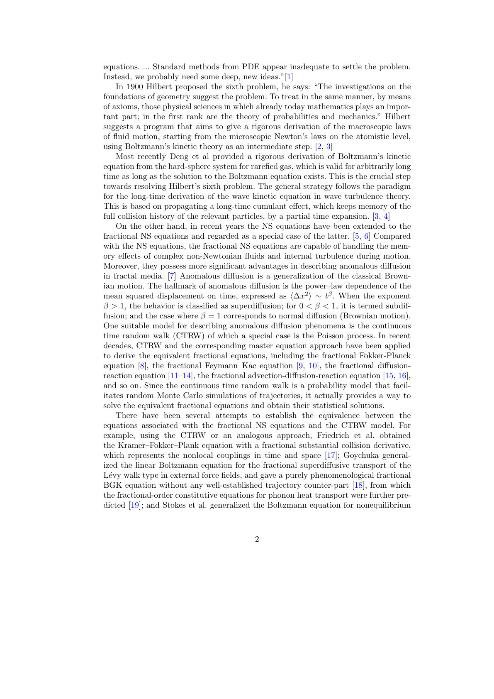
<figcaption class="paper-figure-caption"><b>Fig 1.</b> Low-resolution page preview, page 2</figcaption>
</figure>
<figure class="paper-figure-card">

<figcaption class="paper-figure-caption"><b>Fig 2.</b> Low-resolution page preview, page 3</figcaption>
</figure>
<figure class="paper-figure-card">

<figcaption class="paper-figure-caption"><b>Fig 3.</b> Low-resolution page preview, page 4</figcaption>
</figure>
<figure class="paper-figure-card">
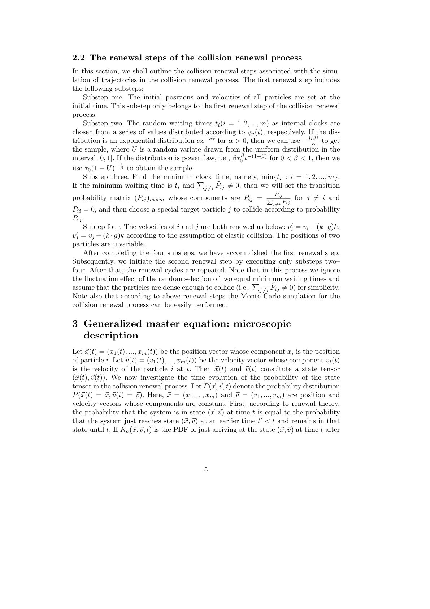
<figcaption class="paper-figure-caption"><b>Fig 4.</b> Low-resolution page preview, page 5</figcaption>
</figure>
<figure class="paper-figure-card">

<figcaption class="paper-figure-caption"><b>Fig 5.</b> Low-resolution page preview, page 6</figcaption>
</figure>
</div>

<p><strong>Summary.</strong> This paper develops a kinetic theory approach to solve the Navier-Stokes equations by modeling particle collisions using a collision renewal process. By analyzing the waiting time distribution, the authors demonstrate that power-law waiting times lead to fractional dynamics, successfully deriving the fractional Navier-Stokes equations from first principles.</p>
<p><strong>Why it may be interesting.</strong> While focused on classical fluid dynamics, the use of fractional calculus and renewal processes to model non-Markovian memory effects is highly relevant to open quantum systems and anomalous diffusion in quantum many-body physics.</p>
<details>
<summary>Detailed structure</summary>
<p><strong>Main problem.</strong> The paper addresses the unsolved Millennium problem of finding solutions to the Navier-Stokes (NS) equations in fluid mechanics.</p>
<p><strong>Main result.</strong> It derives the fractional Navier-Stokes equations by showing that a collision renewal process with power-law waiting times leads to the fractional Boltzmann equation, which in turn yields the fractional NS equations.</p>
<p><strong>Method.</strong> The approach uses renewal theory to derive generalized master equations for the probability distribution of particle states, followed by applying the Chapman-Enskog expansion to reach macroscopic fluid equations.</p>
<p><strong>Model / system.</strong> The model is a system of particles undergoing perfectly elastic collisions, modeled via a collision renewal process. The state evolution is governed by probability distributions $P(\vec{x}, \vec{v}, t)$ and related rate equations.</p>
<p><strong>Key observables.</strong> Probability distribution $P(\vec{x}, \vec{v}, t)$, single-particle probability $n_l(x_a, v_b, t)$, and macroscopic fluid variables like density ($
ho$), velocity ($\mathbf{u}$), and stress ($  ilde{p}$).</p>
<p><strong>Important parameters / regimes.</strong> The waiting time distribution is key: exponential time yields classical NS, while power-law waiting times ($\psi_l(t) \sim t^{-1-eta}$) yield fractional NS equations.</p>
<p><strong>Assumptions / limitations.</strong> Assumptions include perfectly elastic collisions, the state independence of particles for rate equation derivation, and the applicability of the Chapman-Enskog expansion for the macroscopic limit.</p>
<p><strong>Figures summary.</strong> Not specified in the notes, but the structure implies derivations leading to generalized master equations, the fractional BGK equation, and finally the fractional NS equations.</p>
<p><strong>Paper structure.</strong> The paper progresses from establishing the collision renewal process framework to deriving a generalized master equation, specializing this for exponential and power-law waiting times, and finally applying the Chapman-Enskog method to reduce the fractional kinetic equation to the macroscopic fractional Navier-Stokes equations.</p>
</details>
<details>
<summary>Abstract</summary>
<p>The Navier-Stokes equations, which remain unsolved, are crucial equations in fluid mechanics. Discovering the solutions to the Navier-Stokes equations is one of the challenging Millennium problems. In 1900, Hilbert proposed a potential approach to tackle this problem by establishing the relationship between microscopic dynamics and the macroscopic continuum equations. The key bridge is the derivation of Boltzmann equation and the theory of probability. In this paper, we shall use the collision renewal process with arbitrarily distributed waiting times to derive the Boltzmann equation for the time evolution of the probability of the velocity and the displacement of the particle, based on which we prove that the renewal process with exponential collision waiting time is equivalent to the classical Navier-Stokes equations, and that with power-law waiting time is equivalent to the fractional Navier-Stokes equations. Since the collision renewal process with arbitrarily distributed waiting times is a random process and is easy to perform the stochastic simulations of trajectories to obtain the corresponding solution, we actually find a stochastic approach to solve the classical and fractional Navier-Stokes equations.</p>
</details>
<p><sub><a href="#top">↑ back to top</a></sub></p>

<p><a id="paper-2609.10211"></a></p>
<h3 id="finite-particle-quantum-reduction-of-thermodynamic-irreversibility"><a href="http://arxiv.org/abs/2609.10211v1">Finite-Particle Quantum Reduction of Thermodynamic Irreversibility</a></h3>
<p><strong>Authors:</strong> Borhan Ahmadi<br>
<strong>Type:</strong> theory · <strong>Category:</strong> statistical mechanics · <strong>PDF:</strong> <a href="https://arxiv.org/pdf/2609.10211v1">https://arxiv.org/pdf/2609.10211v1</a><br>
<strong>Analysis basis:</strong> full PDF text, analyzed in chunks
<strong>Topic relevance:</strong> <code>analog quantum simulation</code> <strong>2/5</strong> · <code>non-equilibrium universality</code> <strong>2/5</strong> · <code>quantum measurements</code> <strong>2/5</strong> · <code>Keldysh / 2PI / non-Gaussian methods</code> <strong>1/5</strong> · <code>correlated / nonlocal dissipation</code> <strong>1/5</strong> · <code>methods for driven-dissipative</code> <strong>1/5</strong></p>
<div class="figure-strip-hint">↔ Scroll figures horizontally</div>
<div class="paper-figures-scroll">
<figure class="paper-figure-card">
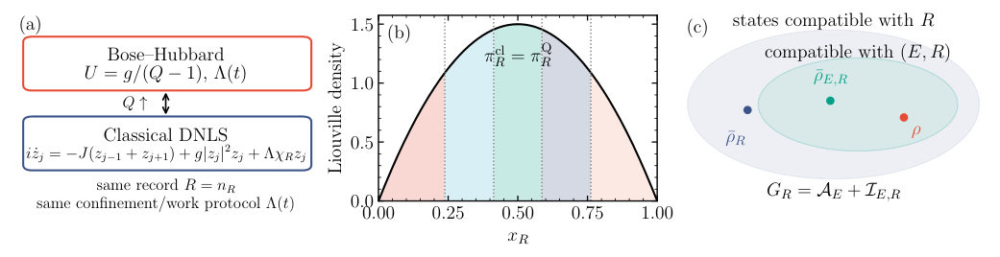
<figcaption class="paper-figure-caption"><b>Fig 1.</b> FIG. 1. Matched quantum–classical construction. (a) The finite-particle Bose–Hubbard model and its number-conserving classical-field counterpart have the same coherent-state energy landscape and undergo the same confinement protocol. (b) The classical right-half coordinate is divided so that each region has the same invariant weight as the matching quantum occupation sector. (c) Three states associated with the same microscopic situation. The exact state ρ contains the full information. The record-only representative ¯ρR keeps only the spatial probabilities. The energy-and-record representative ¯ρE,R also keeps the exact mean energy. The difference ¯ρE,R −¯ρR is the refinement supplied by...</figcaption>
</figure>
<figure class="paper-figure-card">

<figcaption class="paper-figure-caption"><b>Fig 2.</b> FIG. 2. Why the finite-particle quantum process is less ir- reversible. (a) Change in the information hidden from the spatial record, the part resolved by adding the mean energy, and the resulting process entropy generation for the strict ini- tial matching. (b) Classical-minus-quantum process gap split into record and energy-resolved parts. The record part alone favors the classical system, while the energy-resolved part pro- duces the quantum advantage. (c) Endpoint record distribu- tions and the common multiplicity reference. The quantum record is more relaxed even though the combined energy-and- record description leaves a smaller residual information gap. (d) Process entropy generation...</figcaption>
</figure>
<figure class="paper-figure-card">

<figcaption class="paper-figure-caption"><b>Fig 3.</b> FIG. 3. Crossover toward the classical-field regime. (a) Quantum and classical entropy generation of the complete cycle. The retained (E, R) ledger assigns the nonzero pro- cess term to B →C−, while the physical microscopic ledger realizes the same amount during C+ →¯C. The two are not added. (b) Classical-minus-quantum cycle entropy-generation gap. (c) Relative reduction of the cycle entropy generation. (d) Efficiency advantage at matched hot heat input and reser- voir temperatures. No asymptotic power law is fitted.</figcaption>
</figure>
<figure class="paper-figure-card">

<figcaption class="paper-figure-caption"><b>Fig 4.</b> FIG. 4. Robustness to the duration of the isolated ex- pansion. (a) Quantum and classical cycle entropy genera- tion as JτBC is varied. (b) Efficiency advantage at matched cycle resources. (c) Classical-minus-quantum cycle entropy- generation gap. (d) Constraint residual of the energy-and- record reconstruction at each new endpoint C−. The rep- resentative and controlled Hamiltonian are rebuilt for every duration before the cold-side closure is defined.</figcaption>
</figure>
</div>

<p><strong>Summary.</strong> This work compares the thermodynamic irreversibility costs between a finite quantum Bose-Hubbard chain and its classical counterpart when information is limited to coarse measurements. The authors demonstrate that retaining mean energy alongside the spatial record allows the quantum system to generate less entropy and extract more work. This quantum advantage is robustly confirmed across various numerical tests but vanishes in the classical limit.</p>
<p><strong>Why it may be interesting.</strong> It provides a rigorous, information-theoretic framework for quantifying the quantum advantage in non-equilibrium thermodynamics, particularly when system size is finite and coarse measurements are necessary.</p>
<details>
<summary>Detailed structure</summary>
<p><strong>Main problem.</strong> The paper investigates whether the operational reduction of information (coarse-graining) in a finite quantum system incurs less thermodynamic irreversibility cost compared to its matched classical counterpart.</p>
<p><strong>Main result.</strong> The quantum system exhibits smaller entropy generation and higher work output during thermodynamic cycles compared to the classical field, an advantage that diminishes as the particle number approaches the classical limit.</p>
<p><strong>Method.</strong> The analysis uses information-theoretic tools, comparing entropy generation ($\Sigma$) across different coarse-grained descriptions (spatial record $R$ vs. combined energy and record $(E, R)$) for a heat-engine cycle.</p>
<p><strong>Model / system.</strong> The study compares a finite-particle Bose-Hubbard quantum chain with its number-conserving classical-field counterpart, using matched Hamiltonians for comparison.</p>
<p><strong>Key observables.</strong> Entropy generation ($\Sigma_{Q}^{BC}$ vs. $\Sigma_{cl}^{BC}$), work output, and the information gaps ($G_R, A_E, I_{E,R}$).</p>
<p><strong>Important parameters / regimes.</strong> Particle number ($Q$), interaction strength ($g/J$), and the thermal bath temperature ($T_h$).</p>
<p><strong>Assumptions / limitations.</strong> The comparison is restricted to the information contained in the record $(E, R)$, not full state tomography, and the advantage fades as $Q$ increases.</p>
<p><strong>Figures summary.</strong> Figures illustrate the matched quantum-classical construction, the three relevant states ($
ho, ar{
ho}<em E_R="E,R">R, ar{
ho}</em>$), and the quantitative comparison of entropy generation across different protocols and parameter variations.</p>
<p><strong>Paper structure.</strong> The paper establishes the theoretical framework by defining information reduction via entropy gaps, applies this to a heat-engine cycle comparison between quantum and classical systems, and then rigorously tests the resulting inequality ($\Sigma_Q < \Sigma_{cl}$) through various numerical and physical robustness checks.</p>
</details>
<details>
<summary>Abstract</summary>
<p>Thermodynamics is useful because it lets us predict and control complex systems from a few accessible quantities when microscopic reconstruction is impractical. We ask whether this operational reduction can be less costly in a finite quantum system than in a matched classical one. We compare a few-boson Bose--Hubbard chain with its number-conserving classical-field counterpart under the same driving and the same coarse spatial record. The quantum system relaxes more in the observed particle distribution, yet the retained mean energy resolves more of the microscopic structure hidden by that record, leaving less information unusable and smaller entropy generation. We then close the process into a heat-engine cycle whose controls use only the measured mean energy and spatial record, not full state tomography; at matched thermal resources, the smaller entropy generation gives more work and higher efficiency. The advantage fades as the particle number grows toward the classical-field regime.</p>
</details>
<p><sub><a href="#top">↑ back to top</a></sub></p>
<hr>
<p>
<a href="index.html">← Index</a>
 · <a href="papers_02.html">← Previous</a> · <a href="papers_04.html">Next →</a>
</p>
<hr>

</body>
</html>
